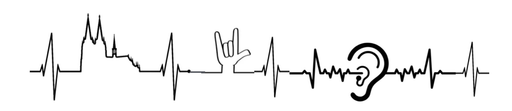

<!DOCTYPE html>
<html lang="de">
<head>
<meta charset="utf-8">
<meta name="viewport" content="width=device-width, initial-scale=1">
<title>Themenbrücken · Johann-Joseph-Gronewaldschule</title>
<link rel="preconnect" href="https://fonts.googleapis.com">
<link rel="preconnect" href="https://fonts.gstatic.com" crossorigin>
<link href="https://fonts.googleapis.com/css2?family=Baloo+2:wght@500;600;700;800&family=Atkinson+Hyperlegible:wght@400;700&display=swap" rel="stylesheet">
<style>
  /* Designsystem „Warm" – grundschulgerechte Weiterentwicklung des Themenbrücken-Entwurfs */
  :root {
    --bg: #fbf6ee; --karte: #ffffff; --ink: #2c2621; --ink2: #7a6f61; --ink3: #8a8072; --ink4: #574c40;
    --linie: #ece2d2; --linie2: #ddceb4; --chip: #f4ecdd; --akzent: #e07a3f; --akzent2: #c2601f; --warn: #c94f4f;
    --auf-akzent: #ffffff; --tipp-bg: #2c2621; --tipp-ink: #fffaf2; --tipp-ink2: #cabfae;
    --bg-glas: rgba(251, 246, 238, 0.88); --hinweis-bg: #fdf1e2; --hinweis-linie: #f2ddbc; --kante: #c9bda8;
    --r1: 30px; --r2: 22px; --r3: 16px; --rp: 999px;
    --schatten: 0 2px 4px rgba(60, 44, 20, 0.05), 0 26px 50px -30px rgba(60, 44, 20, 0.24);
    --schatten-s: 0 2px 6px rgba(60, 44, 20, 0.07);
    --schatten-hoch: 0 16px 30px -18px rgba(60, 44, 20, 0.38);
    --logo-filter: none;
    --font: 'Atkinson Hyperlegible', system-ui, -apple-system, 'Segoe UI', sans-serif;
    --font-kopf: 'Baloo 2', var(--font);
    color-scheme: light;
  }
  /* Warm ist bewusst ein helles Design: kein Dunkelmodus, auch wenn das Gerät dunkel eingestellt ist. */

  html, body { margin: 0; padding: 0; background: var(--bg); }
  * { box-sizing: border-box; }
  body { color: var(--ink); font-family: var(--font); font-size: 16px; line-height: 1.55; -webkit-font-smoothing: antialiased; }
  button, input, textarea { font: inherit; color: inherit; }
  button { cursor: pointer; }
  :focus-visible { outline: 3px solid var(--akzent); outline-offset: 2px; }
  h1, h2, h3 { text-wrap: balance; font-family: var(--font-kopf); }
  .zahl { font-variant-numeric: tabular-nums; }
  .eyebrow { font-size: 11px; letter-spacing: 0.13em; text-transform: uppercase; color: var(--ink2); font-weight: 600; }
  .leise { color: var(--ink2); }

  @keyframes herein { from { opacity: 0; transform: translateY(8px); } to { opacity: 1; transform: none; } }
  @keyframes auf { from { opacity: 0; transform: translateY(-6px); } to { opacity: 1; transform: none; } }
  @keyframes puls { 0% { transform: scale(1); opacity: 0.45; } 70%, 100% { transform: scale(1.6); opacity: 0; } }
  @keyframes schweben { 0%, 100% { transform: translate3d(0, 0, 0); } 50% { transform: translate3d(0, -4px, 0); } }
  @media (prefers-reduced-motion: reduce) {
    *, *::before, *::after { animation: none !important; transition: none !important; }
  }

  /* Kopf */
  .kopfleiste { position: sticky; top: 0; z-index: 12; background: var(--bg-glas); backdrop-filter: blur(14px); -webkit-backdrop-filter: blur(14px); border-bottom: 1px solid var(--linie); }
  .kopf { max-width: 1360px; margin: 0 auto; padding: 14px 24px; display: flex; flex-wrap: wrap; gap: 12px 32px; align-items: center; justify-content: space-between; }
  .marke { display: flex; align-items: center; gap: 18px; min-width: 0; }
  .logo-knopf { border: 0; background: none; padding: 4px; margin: -4px; border-radius: var(--r3); display: block; transition: transform 240ms cubic-bezier(0.34, 1.56, 0.64, 1); }
  .logo-knopf:hover { transform: scale(1.04); }
  .logo-knopf img { height: 42px; width: auto; display: block; filter: var(--logo-filter); }
  .trenner { width: 1px; height: 42px; background: var(--linie2); flex: none; }
  .titel { margin: 1px 0 0; font-family: var(--font-kopf); font-size: 30px; line-height: 1.1; font-weight: 700; letter-spacing: -0.01em; }
  .unterzeile { font-size: 13.5px; color: var(--ink2); margin-top: 3px; }
  .herkunft { font-size: 11.5px; color: var(--ink3); margin-top: 4px; text-wrap: pretty; }
  .reiter { display: flex; flex-wrap: wrap; gap: 4px; padding: 4px; background: var(--chip); border-radius: var(--rp); }
  .reiter button { border: 0; background: none; color: var(--ink2); padding: 9px 16px; border-radius: var(--rp); font-size: 14px; font-weight: 700; white-space: nowrap; transition: background 180ms ease, color 180ms ease; font-family: var(--font-kopf); }
  .reiter button:hover { color: var(--ink); }
  .reiter button.aktiv { background: var(--karte); color: var(--ink); box-shadow: var(--schatten-s); }

  main { max-width: 1360px; margin: 0 auto; padding: 24px 24px 80px; }

  .flaeche { background: var(--karte); border: 1px solid var(--linie); border-radius: var(--r1); box-shadow: var(--schatten); }

  /* Stufenwahl */
  .stufenwahl { padding: 18px 18px 20px; }
  .stufenwahl-kopf { display: flex; flex-wrap: wrap; gap: 6px 18px; align-items: baseline; justify-content: space-between; margin-bottom: 14px; }
  .stufenwahl-kopf .leise { font-size: 13px; text-wrap: pretty; }
  .stufengruppen { display: flex; flex-wrap: wrap; gap: 14px 26px; }
  .stufengruppe { display: flex; flex-direction: column; gap: 8px; min-width: 0; }
  .stufengruppe .eyebrow { color: var(--ink3); font-size: 10.5px; }
  .kacheln { display: flex; gap: 7px; }
  .kachel { position: relative; flex: 1 1 0; min-width: 58px; height: 84px; border: 1px solid var(--linie); background: var(--bg); color: var(--ink); border-radius: var(--r2); display: flex; flex-direction: column; align-items: center; justify-content: center; gap: 4px; transition: background 220ms ease, color 220ms ease, border-color 220ms ease, transform 220ms cubic-bezier(0.22, 1, 0.36, 1), box-shadow 220ms ease; }
  .kachel:hover { transform: translateY(-3px); border-color: var(--linie2); box-shadow: var(--schatten-s); }
  .kachel .nr { font-size: 25px; font-weight: 700; letter-spacing: -0.03em; line-height: 1; font-variant-numeric: tabular-nums; }
  .kachel .unten { font-size: 11px; color: var(--ink2); line-height: 1.25; text-align: center; font-variant-numeric: tabular-nums; }
  .kachel.gewaehlt { background: var(--ink); color: var(--karte); border-color: var(--ink); box-shadow: 0 14px 26px -16px rgba(27, 36, 48, 0.6); }
  .kachel.gewaehlt .unten { color: var(--tipp-ink2); }
  .kachel .treffer { position: absolute; top: 7px; right: 8px; min-width: 19px; height: 19px; padding: 0 5px; border-radius: var(--rp); background: var(--akzent); color: var(--auf-akzent); font-size: 11px; font-weight: 700; display: flex; align-items: center; justify-content: center; }
  .kachel .pfeil { position: absolute; left: 50%; bottom: -7px; width: 12px; height: 12px; margin-left: -6px; background: var(--ink); border-radius: 2px; transform: rotate(45deg); }
  .schmal .kachel { height: 62px; }
  .schmal .kachel .unten { display: none; }

  /* Werkzeugleiste */
  .werkzeug { display: flex; flex-wrap: wrap; gap: 12px 22px; align-items: flex-end; margin: 22px 0 14px; }
  .feld { display: flex; flex-direction: column; gap: 7px; }
  .eingabe { height: 40px; padding: 0 14px; border: 1px solid var(--linie); border-radius: var(--r3); background: var(--karte); outline: none; transition: border-color 160ms ease, box-shadow 160ms ease; }
  .eingabe:focus { border-color: var(--akzent); box-shadow: 0 0 0 4px color-mix(in srgb, var(--akzent) 16%, transparent); }
  .suche { width: 260px; max-width: 100%; }
  .schalter { display: flex; align-items: center; gap: 9px; height: 40px; color: var(--ink4); font-size: 14px; cursor: pointer; }
  .schalter input { width: 16px; height: 16px; accent-color: var(--akzent); margin: 0; }
  .schalter .zahl { color: var(--ink3); }
  .knopf { display: inline-flex; align-items: center; justify-content: center; gap: 8px; height: 40px; padding: 0 16px; border: 1px solid var(--linie); background: var(--karte); color: var(--ink4); border-radius: var(--r3); font-size: 13.5px; font-weight: 600; white-space: nowrap; transition: border-color 160ms ease, color 160ms ease, background 160ms ease, transform 160ms ease; }
  .knopf:hover { border-color: var(--ink3); color: var(--ink); }
  .knopf.an { background: var(--chip); color: var(--ink); }
  .knopf--dunkel { background: var(--ink); color: var(--karte); border-color: var(--ink); }
  .knopf--dunkel:hover { color: var(--karte); transform: translateY(-1px); }
  .knopf--klein { height: 34px; padding: 0 13px; font-size: 13px; border-radius: 11px; }
  .knopf--rund { border-radius: var(--rp); }
  .knopf--warn { color: var(--warn); }
  .knopf--warn:hover { border-color: var(--warn); color: var(--warn); }
  .trefferinfo { font-size: 13px; color: var(--ink2); height: 40px; display: flex; align-items: center; }

  .chips { display: flex; flex-wrap: wrap; gap: 6px; margin-bottom: 16px; animation: herein 240ms ease both; }
  .fachchip { display: flex; align-items: center; gap: 8px; height: 34px; padding: 0 13px 0 11px; border: 1px solid var(--linie); background: var(--karte); border-radius: var(--rp); font-size: 12.5px; font-weight: 500; transition: all 160ms ease; }
  .fachchip.aus { background: var(--chip); color: var(--ink3); border-color: var(--chip); }
  .fachchip .punkt { width: 9px; height: 9px; border-radius: 50%; flex: none; }
  .fachchip .zahl { color: var(--ink2); }

  /* Netz */
  .stufen-layout { display: grid; grid-template-columns: minmax(0, 1fr) 340px; gap: 18px; align-items: start; }
  @media (max-width: 1020px) { .stufen-layout { grid-template-columns: minmax(0, 1fr); } }
  .spalte-links { display: flex; flex-direction: column; gap: 12px; min-width: 0; }
  .buehne-rahmen { position: relative; overflow: hidden; }
  .buehne { position: relative; }
  .buehne svg { position: absolute; left: 0; top: 0; overflow: visible; }
  .knoten { position: absolute; display: flex; align-items: center; justify-content: center; }
  .knoten .ring { position: absolute; border-radius: 50%; animation: puls 2000ms ease-out infinite; }
  .knoten button { position: relative; border: 0; padding: 0; background: none; border-radius: 50%; transition: transform 220ms cubic-bezier(0.34, 1.56, 0.64, 1); }
  .knoten button:hover { transform: scale(1.09); }
  .knoten .kreis { position: absolute; inset: 0; border-radius: 50%; transition: box-shadow 220ms ease, opacity 220ms ease; }
  .knoten .kreis.schwebt { animation: schweben 7s ease-in-out infinite; }
  .knoten .kzahl { position: absolute; inset: 0; display: flex; align-items: center; justify-content: center; color: #fff; font-weight: 700; font-variant-numeric: tabular-nums; pointer-events: none; transition: opacity 220ms ease; }
  .etikett { position: absolute; transform: translateY(-50%); font-size: 13px; font-weight: 700; line-height: 1.2; pointer-events: none; text-wrap: pretty; transition: opacity 200ms ease; }
  .tipp { position: absolute; width: 290px; max-width: 88%; padding: 13px 15px; background: var(--tipp-bg); color: var(--tipp-ink); border-radius: var(--r2); pointer-events: none; transform: translate(-50%, -100%); box-shadow: 0 14px 34px -14px rgba(0, 0, 0, 0.5); z-index: 4; animation: herein 140ms ease both; }
  .tipp .k { font-size: 11px; letter-spacing: 0.08em; text-transform: uppercase; color: var(--tipp-ink2); margin-bottom: 5px; font-weight: 700; }
  .tipp .t { font-size: 15px; line-height: 1.3; font-weight: 600; text-wrap: pretty; }
  .tipp .f { font-size: 12px; color: var(--tipp-ink2); margin-top: 7px; text-wrap: pretty; }
  .leer { position: absolute; inset: 0; display: flex; align-items: center; justify-content: center; pointer-events: none; }
  .leer div { max-width: 360px; text-align: center; color: var(--ink2); font-size: 14px; text-wrap: pretty; }

  .legende { display: flex; flex-wrap: wrap; gap: 6px 18px; align-items: center; justify-content: space-between; padding: 0 6px; font-size: 12.5px; color: var(--ink2); }
  .legende-teile { display: flex; flex-wrap: wrap; gap: 6px 16px; align-items: center; }
  .legende-teil { display: inline-flex; align-items: center; gap: 7px; white-space: nowrap; }
  .legende svg { display: block; }

  .luecken { display: flex; flex-direction: column; gap: 7px; border: 1px dashed var(--linie2); border-radius: var(--r2); padding: 14px 16px; background: var(--karte); }
  .luecken .eyebrow { color: var(--ink3); }
  .luecke { display: flex; gap: 9px; align-items: flex-start; font-size: 12.5px; color: var(--ink4); line-height: 1.45; text-wrap: pretty; }
  .luecke::before { content: ""; width: 6px; height: 6px; border-radius: 50%; background: var(--linie2); flex: none; margin-top: 6px; }
  .luecke b { font-weight: 700; }
  .textknopf { border: 0; background: none; padding: 0; color: var(--akzent); font-weight: 600; font-size: inherit; text-decoration: underline; text-underline-offset: 2px; }

  /* Detail */
  .zu { border: 1px solid var(--linie); background: var(--karte); width: 34px; height: 34px; border-radius: 11px; flex: none; color: var(--ink2); font-size: 18px; line-height: 1; }
  .zu:hover { color: var(--ink); border-color: var(--ink3); }
  .paarkarten { display: flex; flex-direction: column; gap: 12px; }
  .paarkarte { border: 1px solid var(--linie); border-radius: var(--r2); background: var(--karte); padding: 16px 16px 15px; display: flex; flex-direction: column; gap: 12px; }
  .paarkarte.vorschlag { border-style: dashed; border-color: var(--linie2); }
  .paarkopf { display: flex; flex-wrap: wrap; align-items: center; gap: 8px 10px; }
  .paarkopf h3 { margin: 0; font-size: 17px; font-weight: 700; letter-spacing: -0.02em; line-height: 1.25; }
  .pill { display: inline-flex; align-items: center; gap: 6px; height: 24px; padding: 0 10px; border-radius: var(--rp); font-size: 11.5px; font-weight: 700; white-space: nowrap; }
  .pill--eng { background: color-mix(in srgb, var(--akzent) 14%, var(--karte)); color: var(--akzent2); }
  .pill--eng::before { content: ""; width: 7px; height: 7px; border-radius: 50%; background: var(--akzent); }
  .pill--erg { background: var(--chip); color: var(--ink4); }
  .pill--vorschlag { border: 1px dashed var(--linie2); color: var(--ink2); }
  .pill--neu { background: color-mix(in srgb, var(--warn) 12%, var(--karte)); color: var(--warn); }
  .idee { margin: 0; font-size: 14px; line-height: 1.55; color: var(--ink4); max-width: 68ch; text-wrap: pretty; }
  .gegenueber { display: grid; grid-template-columns: minmax(0, 1fr) 40px minmax(0, 1fr); align-items: stretch; }
  .seite { min-width: 0; background: var(--bg); border: 1px solid var(--linie); border-top: 3px solid var(--fach, var(--linie)); border-radius: var(--r3); padding: 11px 13px; display: flex; flex-direction: column; gap: 10px; }
  .seite .fachname { font-size: 11px; letter-spacing: 0.1em; text-transform: uppercase; font-weight: 700; }
  .vh { display: flex; flex-direction: column; gap: 3px; min-width: 0; }
  .vh .t { font-size: 13.5px; font-weight: 700; line-height: 1.32; text-wrap: pretty; }
  .vh .u { font-size: 12px; color: var(--ink2); }
  .vh .mehr { margin-top: 5px; display: flex; flex-direction: column; gap: 3px; }
  .vh .mehr .k { font-size: 11.5px; color: var(--ink2); }
  .vh .mehr ul { margin: 0; padding-left: 16px; font-size: 12.5px; line-height: 1.45; }
  .vh .mehr .if { font-size: 12.5px; margin-bottom: 4px; text-wrap: pretty; }
  .mitte { position: relative; display: flex; align-items: center; justify-content: center; }
  .mitte::before { content: ""; position: absolute; top: 12px; bottom: 12px; left: 50%; border-left: 1px dashed var(--linie2); }
  .mitte span { position: relative; width: 26px; height: 26px; border-radius: 50%; background: var(--ink); color: var(--karte); display: flex; align-items: center; justify-content: center; font-size: 13px; }
  .aktionen { display: flex; gap: 8px; flex-wrap: wrap; align-items: center; }
  .aktionen .rechts { margin-left: auto; }
  .gemerkt { background: var(--chip); color: var(--ink2); border-color: var(--chip); }
  .partnerliste { display: flex; flex-direction: column; gap: 8px; }
  .partner { display: flex; align-items: center; gap: 12px; text-align: left; border: 1px solid var(--linie); background: var(--karte); border-radius: var(--r3); padding: 12px 14px; transition: border-color 160ms ease, transform 160ms ease; }
  .partner:hover { border-color: var(--ink3); transform: translateX(2px); }
  .partner .punkt { width: 10px; height: 10px; border-radius: 50%; flex: none; }
  .partner .mitteltext { flex: 1; min-width: 0; }
  .partner .t { display: block; font-size: 14px; font-weight: 700; }
  .partner .u { display: block; font-size: 12px; color: var(--ink2); margin-top: 2px; text-wrap: pretty; }

  .praxis { display: flex; flex-wrap: wrap; align-items: center; gap: 8px 12px; font-size: 13px; }
  .pill--erprobt { background: color-mix(in srgb, #1f7a4d 14%, var(--karte)); color: #18653f; }
  .pill--erprobt::before { content: "✓"; }

  /* Themen im Fachblatt: jedes Thema öffnet seine Brücke */
  .themenchips { display: flex; flex-wrap: wrap; gap: 6px; }
  .themenchip { display: inline-flex; align-items: center; gap: 7px; padding: 7px 10px 7px 11px; border-radius: var(--rp); background: var(--karte); border: 1px solid var(--linie); font-size: 12.5px; font-weight: 600; color: var(--ink); text-align: left; transition: border-color 160ms ease, color 160ms ease, transform 160ms ease; }
  .themenchip .punkt { width: 8px; height: 8px; border-radius: 50%; flex: none; }
  .themenchip svg { color: var(--ink3); flex: none; transition: transform 160ms ease, color 160ms ease; }
  .themenchip:hover { border-color: var(--akzent); color: var(--akzent2); transform: translateY(-1px); }
  .themenchip:hover svg { color: var(--akzent); transform: translateX(2px); }
  .blatt-inhalt > .paarkarte.hervor { border-color: var(--akzent); box-shadow: 0 0 0 4px color-mix(in srgb, var(--akzent) 16%, transparent); animation: herein 380ms cubic-bezier(0.22, 1, 0.36, 1) both, aufleuchten 1600ms ease-out both; }
  @keyframes aufleuchten { 0% { box-shadow: 0 0 0 0 color-mix(in srgb, var(--akzent) 50%, transparent); } 40% { box-shadow: 0 0 0 9px color-mix(in srgb, var(--akzent) 22%, transparent); } 100% { box-shadow: 0 0 0 4px color-mix(in srgb, var(--akzent) 16%, transparent); } }

  /* Seitenleiste */
  .seitenleiste { display: flex; flex-direction: column; gap: 10px; min-width: 0; }
  .seitenleiste-kopf { display: flex; align-items: baseline; justify-content: space-between; gap: 10px; padding: 0 2px; }
  .paarliste { display: flex; flex-direction: column; gap: 8px; overflow-y: auto; padding: 2px 4px 4px 2px; }
  @media (max-width: 1020px) { .paarliste { max-height: none !important; } }
  .paar { text-align: left; border: 1px solid var(--linie); background: var(--karte); border-radius: var(--r2); padding: 13px 15px; display: flex; flex-direction: column; gap: 8px; transition: border-color 160ms ease, transform 160ms ease, box-shadow 160ms ease; }
  .paar:hover { border-color: var(--linie2); transform: translateY(-2px); box-shadow: var(--schatten-hoch); }
  .paar.gewaehlt { border-color: var(--ink); background: var(--chip); }
  .paar .zeile { display: flex; align-items: center; gap: 9px; }
  .paar .punkte { display: flex; align-items: center; flex: none; }
  .paar .punkte span { width: 11px; height: 11px; border-radius: 50%; box-shadow: 0 0 0 2px var(--karte); }
  .paar .punkte span + span { margin-left: -3px; }
  .paar .name { flex: 1; min-width: 0; font-size: 14px; font-weight: 700; letter-spacing: -0.01em; }
  .paar .anz { font-size: 12px; color: var(--ink2); white-space: nowrap; }
  .paar .balken { height: 4px; border-radius: var(--rp); background: var(--chip); overflow: hidden; }
  .paar .balken span { display: block; height: 4px; border-radius: var(--rp); background: var(--akzent); }
  .paar.nurvorschlag .balken span { background: var(--kante); }
  .paar .themen { font-size: 12px; color: var(--ink2); line-height: 1.4; text-wrap: pretty; }
  .leerkarte { border: 1px dashed var(--linie2); border-radius: var(--r2); padding: 22px 16px; text-align: center; color: var(--ink2); font-size: 13px; text-wrap: pretty; }

  /* Matrix */
  .matrix-kopf { display: flex; flex-wrap: wrap; gap: 12px 24px; align-items: flex-end; margin-bottom: 18px; }
  .stufenknoepfe { display: flex; flex-wrap: wrap; gap: 5px; }
  .stufenknopf { min-width: 46px; height: 36px; padding: 0 12px; border: 1px solid var(--linie); background: var(--karte); color: var(--ink2); border-radius: 11px; font-weight: 600; font-size: 14px; font-variant-numeric: tabular-nums; transition: all 160ms ease; }
  .stufenknopf.an { background: var(--ink); color: var(--karte); border-color: var(--ink); }
  .matrix-hinweis { flex: 1 1 240px; min-width: 0; max-width: 480px; font-size: 13px; color: var(--ink2); text-wrap: pretty; }
  .matrix-rahmen { padding: 20px; overflow-x: auto; }
  .m-reihe { display: flex; gap: 5px; margin-bottom: 5px; align-items: stretch; }
  .m-ecke { width: 172px; flex: none; }
  .m-spalte { width: 76px; flex: none; border: 0; background: none; padding: 3px 2px; text-align: center; font-size: 11.5px; line-height: 1.2; font-weight: 700; border-radius: 9px; text-wrap: pretty; transition: opacity 160ms ease, background 160ms ease; }
  .m-spalte:hover, .m-fach:hover { background: var(--chip); }
  .m-fach { width: 172px; flex: none; display: flex; align-items: center; gap: 8px; font-size: 13px; font-weight: 600; border: 0; background: none; padding: 0 6px 0 4px; text-align: left; border-radius: 9px; transition: opacity 160ms ease, background 160ms ease; }
  .m-fach .punkt { width: 9px; height: 9px; border-radius: 50%; flex: none; }
  .m-zelle { width: 76px; flex: none; height: 50px; border: 1px solid var(--linie); border-radius: 11px; font-weight: 700; font-variant-numeric: tabular-nums; transition: all 160ms ease; }
  .m-zelle.leer { color: var(--linie2); cursor: default; background: var(--karte); }
  .m-zelle.diag { background: var(--chip); border-color: var(--chip); color: var(--linie2); cursor: default; }
  .m-zelle.an { background: var(--ink); border-color: var(--ink); color: var(--karte); }
  .zellen-detail { margin-top: 22px; display: flex; flex-direction: column; gap: 12px; animation: herein 300ms ease both; }
  .zellen-detail-kopf { display: flex; align-items: baseline; gap: 12px; flex-wrap: wrap; }
  .zellen-detail-kopf h2 { margin: 0; font-size: 24px; font-weight: 800; letter-spacing: -0.03em; }
  .kartenraster { display: grid; grid-template-columns: repeat(auto-fill, minmax(min(100%, 320px), 1fr)); gap: 12px; }
  .zellpaar { text-align: left; border: 1px solid var(--linie); background: var(--karte); border-radius: var(--r2); padding: 15px 16px; display: flex; flex-direction: column; gap: 8px; transition: border-color 160ms ease, transform 160ms ease; }
  .zellpaar:hover { border-color: var(--ink3); transform: translateY(-2px); }
  .zellpaar .oben { display: flex; align-items: center; gap: 8px; flex-wrap: wrap; font-size: 12px; color: var(--ink2); }
  .stufenmarke { padding: 3px 9px; border-radius: var(--rp); background: var(--chip); font-weight: 700; color: var(--ink4); font-variant-numeric: tabular-nums; }
  .zellpaar .th { font-size: 15px; font-weight: 700; letter-spacing: -0.01em; }
  .zellpaar .vt { font-size: 13px; line-height: 1.38; color: var(--ink4); text-wrap: pretty; }

  /* Merkliste */
  .abschnittskopf { display: flex; align-items: baseline; gap: 14px; flex-wrap: wrap; margin-bottom: 18px; justify-content: space-between; }
  .abschnittskopf h2 { margin: 0; font-size: 27px; font-weight: 800; letter-spacing: -0.035em; }
  .hinweis { display: flex; align-items: flex-start; gap: 11px; margin-bottom: 18px; padding: 14px 16px; border: 1px solid var(--hinweis-linie); background: var(--hinweis-bg); border-radius: var(--r2); font-size: 13.5px; color: var(--ink4); line-height: 1.55; text-wrap: pretty; }
  .hinweis::before { content: ""; width: 7px; height: 7px; border-radius: 50%; background: var(--akzent); flex: none; margin-top: 8px; }
  .merkraster { display: grid; grid-template-columns: repeat(auto-fill, minmax(min(100%, 330px), 1fr)); gap: 14px; }
  .merkkarte { background: var(--karte); border: 1px solid var(--linie); border-radius: var(--r1); padding: 20px; display: flex; flex-direction: column; gap: 12px; box-shadow: var(--schatten-s); }
  .merktitel { flex: 1; min-width: 0; border: 0; border-bottom: 1px dashed var(--linie2); background: none; padding: 2px 0 6px; outline: none; font-weight: 800; letter-spacing: -0.025em; font-size: 19px; line-height: 1.25; resize: none; overflow: hidden; min-height: 52px; }
  .merkkarte .zeile { display: flex; gap: 10px; align-items: flex-start; }
  .loeschen { border: 1px solid var(--linie); background: var(--bg); width: 30px; height: 30px; border-radius: 9px; color: var(--ink2); flex: none; }
  .loeschen:hover { border-color: var(--warn); color: var(--warn); }
  .marken { display: flex; flex-wrap: wrap; gap: 6px; }
  .marke-fach { display: flex; align-items: center; gap: 7px; padding: 4px 11px; border-radius: var(--rp); background: var(--chip); font-size: 12px; font-weight: 600; white-space: nowrap; }
  .marke-fach span { width: 8px; height: 8px; border-radius: 50%; }
  .marke-rand { padding: 4px 11px; border-radius: var(--rp); border: 1px solid var(--linie); font-size: 12px; color: var(--ink2); white-space: nowrap; }
  .merkkarte ul { margin: 0; padding-left: 17px; font-size: 13px; color: var(--ink4); line-height: 1.45; }
  .merkkarte .idee { font-size: 13.5px; }
  .notiz { min-height: 76px; border: 1px solid var(--linie); border-radius: var(--r3); padding: 10px 12px; background: var(--bg); outline: none; font-size: 13px; line-height: 1.5; resize: vertical; }
  .notiz:focus { border-color: var(--akzent); }
  .nur-druck { display: none; }

  /* Lehrpläne */
  .planraster { display: grid; grid-template-columns: repeat(auto-fill, minmax(min(100%, 270px), 1fr)); gap: 14px; }
  .plankarte { background: var(--karte); border: 1px solid var(--linie); border-radius: var(--r1); padding: 18px; display: flex; flex-direction: column; gap: 12px; box-shadow: var(--schatten-s); transition: border-color 180ms ease, transform 180ms ease, box-shadow 180ms ease; }
  .plankarte:hover { border-color: var(--linie2); transform: translateY(-2px); box-shadow: var(--schatten-hoch); }
  .plankarte > button { border: 0; background: none; padding: 0; text-align: left; display: flex; flex-direction: column; gap: 12px; }
  .plankarte .fach { display: flex; align-items: center; gap: 9px; font-weight: 800; letter-spacing: -0.03em; font-size: 20px; line-height: 1.15; }
  .plankarte .fach span { width: 11px; height: 11px; border-radius: 50%; flex: none; }
  .kennzahlen { display: flex; flex-wrap: wrap; gap: 20px; }
  .kennzahl { display: flex; flex-direction: column; gap: 1px; }
  .kennzahl b { font-size: 22px; line-height: 1.15; font-weight: 700; font-variant-numeric: tabular-nums; white-space: nowrap; }
  .kennzahl span { font-size: 10.5px; letter-spacing: 0.1em; text-transform: uppercase; color: var(--ink2); font-weight: 600; }
  .plankarte .klein { font-size: 13px; color: var(--ink2); }
  .weiter { display: flex; align-items: center; gap: 6px; font-size: 13px; color: var(--akzent); font-weight: 700; }
  .planaktionen { display: flex; gap: 8px; border-top: 1px solid var(--chip); padding-top: 12px; }
  .erklaerung { display: grid; grid-template-columns: repeat(auto-fit, minmax(min(100%, 250px), 1fr)); gap: 22px; padding: 20px 22px; margin-bottom: 22px; }
  .erklaerung h3 { margin: 0 0 6px; font-size: 15px; font-weight: 800; letter-spacing: -0.01em; display: flex; align-items: center; gap: 9px; }
  .erklaerung p { margin: 0; font-size: 13.5px; line-height: 1.55; color: var(--ink4); text-wrap: pretty; }
  .erklaerung code { font-size: 12.5px; background: var(--chip); padding: 1px 6px; border-radius: 6px; }
  .planstufe { display: flex; flex-direction: column; gap: 12px; }
  .planstufe-kopf { display: flex; align-items: baseline; gap: 12px; flex-wrap: wrap; border-bottom: 1px solid var(--linie); padding-bottom: 8px; }
  .planstufe-kopf b { font-size: 20px; font-weight: 800; letter-spacing: -0.025em; }
  .vorhabenraster { display: grid; grid-template-columns: repeat(auto-fill, minmax(min(100%, 300px), 1fr)); gap: 12px; }
  .vorhabenkarte { background: var(--karte); border: 1px solid var(--linie); border-radius: var(--r2); padding: 15px 16px; display: flex; flex-direction: column; gap: 9px; text-align: left; width: 100%; transition: border-color 160ms ease, transform 160ms ease, box-shadow 160ms ease; }
  .vorhabenkarte:hover { border-color: var(--linie2); transform: translateY(-2px); box-shadow: var(--schatten-hoch); }
  .vorhabenkarte .oeffnen { margin-top: auto; padding-top: 2px; }
  .vorhabenkarte:hover .oeffnen svg { transform: translateX(3px); }

  /* Lehrplan-Auszug im Vorhaben-Blatt */
  .auszug { border-left: 4px solid var(--linie2); background: var(--karte); border-radius: 0 var(--r3) var(--r3) 0; padding: 13px 15px; display: flex; flex-direction: column; gap: 8px; }
  .auszug ul, .fp-hinweis ul { margin: 0; padding-left: 18px; display: flex; flex-direction: column; gap: 5px; }
  .auszug li { font-size: 14px; line-height: 1.55; color: var(--ink4); text-wrap: pretty; }
  .auszug .fundstelle { font-size: 11.5px; color: var(--ink3); text-wrap: pretty; }
  .fp-hinweis { border: 1px solid var(--hinweis-linie); background: var(--hinweis-bg); border-radius: var(--r3); padding: 13px 15px; display: flex; flex-direction: column; gap: 8px; }
  .beschluss-hinweis { border: 1px solid color-mix(in srgb, var(--akzent) 34%, var(--linie)); background: color-mix(in srgb, var(--akzent) 7%, var(--karte)); border-radius: var(--r3); padding: 13px 15px; display: flex; flex-direction: column; gap: 6px; }
  .beschluss-hinweis li { font-size: 13.5px; line-height: 1.5; color: var(--ink4); text-wrap: pretty; }
  .fp-hinweis li { font-size: 13.5px; line-height: 1.5; color: var(--ink4); text-wrap: pretty; }
  .vorhabenkarte .kopfzeile { display: flex; align-items: baseline; gap: 9px; }
  .vorhabenkarte .nr { font-size: 12px; color: var(--ink3); font-variant-numeric: tabular-nums; flex: none; }
  .vorhabenkarte .t { font-size: 15px; font-weight: 700; line-height: 1.3; text-wrap: pretty; }
  .worte { display: flex; flex-wrap: wrap; gap: 5px; }
  .wort { padding: 3px 9px; border-radius: var(--rp); background: var(--chip); font-size: 11.5px; white-space: nowrap; }
  .brueckenzeile { font-size: 12.5px; color: var(--akzent2); font-weight: 600; text-wrap: pretty; }
  .brueckenzeile.keine { color: var(--ink3); font-weight: 500; }
  .zurueck { display: inline-flex; align-items: center; gap: 7px; }

  .toast { position: fixed; left: 50%; bottom: 28px; transform: translateX(-50%); background: var(--tipp-bg); color: var(--tipp-ink); padding: 12px 20px; border-radius: var(--rp); font-size: 14px; font-weight: 600; pointer-events: none; z-index: 30; box-shadow: 0 14px 34px -14px rgba(0, 0, 0, 0.55); animation: herein 260ms cubic-bezier(0.22, 1, 0.36, 1) both; }

  /* Netz: Fächer gleiten beim Stufenwechsel an ihren neuen Platz */
  .knoten { transition: left 700ms cubic-bezier(0.22, 1, 0.36, 1), top 700ms cubic-bezier(0.22, 1, 0.36, 1), width 700ms cubic-bezier(0.22, 1, 0.36, 1), height 700ms cubic-bezier(0.22, 1, 0.36, 1); }
  .knoten button { transition: transform 220ms cubic-bezier(0.34, 1.56, 0.64, 1), width 700ms cubic-bezier(0.22, 1, 0.36, 1), height 700ms cubic-bezier(0.22, 1, 0.36, 1); }
  .etikett { transition: left 700ms cubic-bezier(0.22, 1, 0.36, 1), top 700ms cubic-bezier(0.22, 1, 0.36, 1), opacity 200ms ease; }
  /* Lichtpunkte wandern über die gewählte Brücke in beide Richtungen: Austausch zwischen zwei Fächern */
  .fluss { animation: fluss 2.6s linear infinite; pointer-events: none; }
  .fluss.zwei { animation-direction: reverse; }
  @keyframes fluss { from { stroke-dashoffset: 1; } to { stroke-dashoffset: 0; } }
  .coach { position: absolute; transform: translate(-50%, -100%); display: flex; flex-direction: column; align-items: center; gap: 6px; pointer-events: none; z-index: 3; animation: herein 500ms 900ms cubic-bezier(0.22, 1, 0.36, 1) both; }
  .coach-text { background: var(--akzent); color: var(--auf-akzent); font-size: 12.5px; font-weight: 700; padding: 7px 12px; border-radius: var(--rp); white-space: nowrap; box-shadow: 0 10px 24px -10px color-mix(in srgb, var(--akzent) 80%, transparent); }
  .coach-punkt { position: relative; width: 12px; height: 12px; border-radius: 50%; background: var(--akzent); border: 2px solid var(--karte); }
  .coach-punkt::after { content: ""; position: absolute; inset: -2px; border-radius: 50%; background: var(--akzent); animation: puls 1600ms ease-out infinite; }

  /* Karten in der Seitenleiste zeigen, dass sie sich öffnen lassen */
  .paar-fuss { display: flex; align-items: center; gap: 8px; }
  .oeffnen { margin-left: auto; display: inline-flex; align-items: center; gap: 4px; color: var(--akzent); font-size: 12.5px; font-weight: 700; white-space: nowrap; }
  .oeffnen svg, .projektlink .pfeil-r, .projektkarte .oeffnen svg { transition: transform 200ms ease; }
  .paar:hover .oeffnen svg, .projektkarte:hover .oeffnen svg { transform: translateX(3px); }
  .pill--projekt { background: color-mix(in srgb, var(--akzent) 10%, var(--karte)); color: var(--akzent2); }

  /* Detailblatt */
  .blatt-hinter { position: fixed; inset: 0; background: rgba(27, 36, 48, 0.24); z-index: 40; animation: einblenden 240ms ease both; }
  .blatt { position: fixed; top: 0; right: 0; bottom: 0; width: min(620px, 100vw); background: var(--bg); z-index: 41; display: flex; flex-direction: column; border-left: 1px solid var(--linie); box-shadow: -30px 0 70px -30px rgba(27, 36, 48, 0.5); animation: reinRechts 480ms cubic-bezier(0.22, 1, 0.36, 1) both; }
  .blatt-griff { display: none; }
  .blatt-kopf { display: flex; align-items: flex-start; gap: 12px; padding: 18px 20px 16px; background: var(--karte); border-bottom: 1px solid var(--linie); }
  .blatt-kopf .titelblock { flex: 1; min-width: 0; }
  .blatt-kopf h2 { margin: 5px 0 0; font-size: 24px; line-height: 1.15; font-weight: 800; letter-spacing: -0.03em; }
  .blatt-kopf .leise { font-size: 13px; margin-top: 4px; }
  .blatt-zurueck { border: 1px solid var(--linie); background: var(--karte); height: 34px; padding: 0 12px 0 9px; border-radius: 11px; flex: none; display: inline-flex; align-items: center; gap: 5px; color: var(--ink4); font-size: 13px; font-weight: 600; }
  .blatt-inhalt { flex: 1 1 auto; min-height: 0; overflow-y: auto; overscroll-behavior: contain; padding: 18px 20px 36px; display: flex; flex-direction: column; gap: 14px; }
  .blatt-inhalt > * { animation: herein 380ms cubic-bezier(0.22, 1, 0.36, 1) both; }
  @keyframes reinRechts { from { transform: translateX(70px); opacity: 0; } to { transform: none; opacity: 1; } }
  @keyframes reinUnten { from { transform: translateY(90px); opacity: 0; } to { transform: none; opacity: 1; } }
  @keyframes einblenden { from { opacity: 0; } to { opacity: 1; } }

  .projektlink { display: flex; align-items: center; gap: 12px; width: 100%; text-align: left; border: 1px solid color-mix(in srgb, var(--akzent) 28%, var(--linie)); background: color-mix(in srgb, var(--akzent) 6%, var(--karte)); border-radius: var(--r3); padding: 11px 13px; transition: border-color 160ms ease, background 160ms ease; }
  .projektlink:hover { border-color: var(--akzent); background: color-mix(in srgb, var(--akzent) 10%, var(--karte)); }
  .projektlink:hover .pfeil-r { transform: translateX(3px); }
  .projektlink .ico { width: 32px; height: 32px; border-radius: 10px; background: var(--akzent); color: var(--auf-akzent); display: flex; align-items: center; justify-content: center; flex: none; }
  .projektlink .txt { flex: 1; min-width: 0; }
  .projektlink .k { display: block; font-size: 11px; letter-spacing: 0.1em; text-transform: uppercase; color: var(--akzent2); font-weight: 700; }
  .projektlink .t { display: block; font-size: 14.5px; font-weight: 700; line-height: 1.3; }
  .projektlink .pfeil-r { color: var(--akzent); flex: none; }

  /* Projektideen */
  .filterzeile { display: flex; flex-wrap: wrap; gap: 12px 22px; align-items: flex-end; margin-bottom: 18px; }
  .auswahl { height: 40px; padding: 0 12px; border: 1px solid var(--linie); border-radius: var(--r3); background: var(--karte); font-weight: 600; font-size: 13.5px; color: var(--ink4); }
  .projektraster { display: grid; grid-template-columns: repeat(auto-fill, minmax(min(100%, 300px), 1fr)); gap: 14px; }
  .projektkarte { text-align: left; border: 1px solid var(--linie); background: var(--karte); border-radius: var(--r2); padding: 17px 18px 15px; display: flex; flex-direction: column; gap: 10px; box-shadow: var(--schatten-s); transition: border-color 180ms ease, transform 180ms ease, box-shadow 180ms ease; }
  .projektkarte:hover { border-color: var(--linie2); transform: translateY(-3px); box-shadow: var(--schatten-hoch); }
  .projektkarte .oben { display: flex; flex-wrap: wrap; gap: 6px; align-items: center; }
  .faecherzeile { display: flex; flex-wrap: wrap; gap: 4px 12px; font-size: 12px; font-weight: 700; }
  .faecherzeile span { display: inline-flex; align-items: center; gap: 6px; }
  .faecherzeile i { width: 8px; height: 8px; border-radius: 50%; display: inline-block; }
  .projektkarte .h { display: block; margin: 0; font-size: 17.5px; font-weight: 800; letter-spacing: -0.02em; line-height: 1.25; }
  .projektkarte .lf { font-size: 13.5px; color: var(--ink4); line-height: 1.5; display: -webkit-box; -webkit-line-clamp: 3; -webkit-box-orient: vertical; overflow: hidden; }
  .projektkarte .fuss { display: flex; align-items: center; gap: 10px; margin-top: auto; padding-top: 10px; border-top: 1px solid var(--chip); font-size: 12px; color: var(--ink2); }
  .leitfrage { margin: 0; font-size: 19px; line-height: 1.4; font-weight: 700; letter-spacing: -0.015em; color: var(--ink); text-wrap: pretty; }
  .fakten { display: grid; grid-template-columns: repeat(auto-fit, minmax(min(100%, 200px), 1fr)); gap: 10px; }
  .fakt { background: var(--karte); border: 1px solid var(--linie); border-radius: var(--r3); padding: 12px 14px; display: flex; flex-direction: column; gap: 3px; }
  .fakt .v { font-size: 14px; font-weight: 600; line-height: 1.4; text-wrap: pretty; }
  .ablauf { list-style: none; margin: 0; padding: 0; }
  .schritt { position: relative; display: grid; grid-template-columns: 34px minmax(0, 1fr); gap: 12px; padding-bottom: 16px; animation: herein 420ms cubic-bezier(0.22, 1, 0.36, 1) both; animation-delay: calc(160ms + var(--i) * 90ms); }
  .schritt::before { content: ""; position: absolute; left: 16px; top: 36px; bottom: 2px; width: 2px; background: var(--linie); }
  .schritt:last-child { padding-bottom: 0; }
  .schritt:last-child::before { display: none; }
  .schritt .nr { width: 34px; height: 34px; border-radius: 50%; background: var(--karte); border: 2px solid var(--fach, var(--akzent)); display: flex; align-items: center; justify-content: center; font-weight: 800; font-size: 14px; font-variant-numeric: tabular-nums; }
  .schritt .wer { font-size: 11px; font-weight: 700; letter-spacing: 0.09em; text-transform: uppercase; margin-top: 2px; }
  .schritt .was { font-size: 14px; line-height: 1.5; color: var(--ink4); margin-top: 2px; text-wrap: pretty; }
  .seitenraster { display: grid; grid-template-columns: repeat(auto-fit, minmax(min(100%, 230px), 1fr)); gap: 10px; }

  @media (max-width: 720px) {
    .kopf { flex-direction: column; flex-wrap: nowrap; align-items: stretch; padding: 10px 14px 12px; gap: 10px; }
    .kopf > * { min-width: 0; max-width: 100%; }
    .marke { gap: 12px; }
    .logo-knopf img { height: 24px; }
    .trenner { height: 32px; }
    .titel { font-size: 23px; }
    .unterzeile, .herkunft { display: none; }
    .kopf .eyebrow { font-size: 9.5px; }
    .reiter { overflow-x: auto; flex-wrap: nowrap; scrollbar-width: none; }
    .reiter::-webkit-scrollbar { display: none; }
    .reiter button { flex: none; padding: 8px 13px; font-size: 13px; }
    main { padding: 16px 14px 72px; }
    .stufenwahl { padding: 14px 14px 10px; }
    .stufenwahl-kopf .leise { display: none; }
    .stufengruppen { flex-wrap: nowrap; overflow-x: auto; scroll-snap-type: x proximity; margin: 0 -14px; padding: 2px 14px 12px; gap: 16px; scrollbar-width: none; }
    .stufengruppen::-webkit-scrollbar { display: none; }
    .stufengruppe { flex: none !important; }
    .kachel { flex: none; width: 60px; min-width: 60px; height: 60px; scroll-snap-align: start; }
    .kachel .nr { font-size: 22px; }
    .kachel .unten { display: none; }
    .werkzeug { gap: 8px 16px; margin: 16px 0 12px; }
    .werkzeug .feld { flex: 1 1 100%; }
    .suche { width: 100%; }
    .schalter { height: auto; min-height: 34px; font-size: 13.5px; }
    .legende { flex-direction: column; align-items: flex-start; gap: 8px; }
    .gegenueber { grid-template-columns: minmax(0, 1fr); row-gap: 8px; }
    .gegenueber .mitte { display: none; }
    .aktionen .rechts { margin-left: 0; }
    .blatt { top: auto; left: 0; width: 100%; max-height: 90vh; max-height: 90dvh; border-left: 0; border-radius: 22px 22px 0 0; animation-name: reinUnten; box-shadow: 0 -24px 60px -24px rgba(27, 36, 48, 0.55); }
    .blatt-griff { display: block; background: var(--karte); border-radius: 22px 22px 0 0; padding: 8px 0 2px; }
    .blatt-griff span { display: block; width: 42px; height: 5px; border-radius: var(--rp); background: var(--linie2); margin: 0 auto; }
    .blatt-kopf { padding: 8px 16px 14px; }
    .blatt-kopf h2 { font-size: 21px; }
    .blatt-inhalt { padding: 14px 14px calc(28px + env(safe-area-inset-bottom)); }
    .matrix-rahmen { padding: 12px; }
    .m-ecke, .m-fach { width: 118px; }
    .m-spalte, .m-zelle { width: 58px; }
    .m-zelle { height: 44px; }
    .abschnittskopf h2 { font-size: 23px; }
    .toast { bottom: calc(18px + env(safe-area-inset-bottom)); max-width: calc(100vw - 28px); text-align: center; }
  }

  @media print {
    html, body { background: #fff !important; }
    [data-drucken="aus"] { display: none !important; }
    .nur-druck { display: block !important; }
    .merkkarte { break-inside: avoid; box-shadow: none !important; border-color: #cfd6df !important; }
    textarea { display: none !important; }
    main { padding: 0 !important; }
    @page { margin: 16mm; }
  }
</style>
</head>
<body>
<div id="app"></div>
<script src="./daten.js"></script>
<script src="./bruecken.js"></script>
<script src="./projekte.js"></script>
<script src="https://cdnjs.cloudflare.com/ajax/libs/preact/10.24.3/preact.umd.min.js"></script>
<script src="https://cdnjs.cloudflare.com/ajax/libs/htm/3.1.1/htm.umd.min.js"></script>
<script>
(function () {
  "use strict";
  const { h, render, Component, createRef } = preact;
  const html = htm.bind(h);

  const STUFEN = ["EP1", "EP2", "EP3", "3", "4"];
  const EINGANGSPHASE = ["EP1", "EP2", "EP3"];
  const PRIMARSTUFE = ["3", "4"];
  const ORDNUNG = ["Deutsch", "Mathematik", "Sachunterricht", "Englisch", "Kunst", "Musik", "Sport", "DGS", "Religion", "Medienunterricht"];
  const FARBEN = {
    "Deutsch": "#ce6d6d", "Mathematik": "#c89c5a", "Sachunterricht": "#a5bf3f", "Kunst": "#5fc147",
    "Musik": "#47c178", "Sport": "#43c0c0", "DGS": "#6d94ce", "Englisch": "#816dce",
    "Religion": "#bb6dce", "Medienunterricht": "#ce6da7"
  };
  const TINTE = {
    "Deutsch": "#ad2828", "Mathematik": "#986a23", "Sachunterricht": "#687b1d", "Kunst": "#33841f",
    "Musik": "#1f8447", "Sport": "#1e8080", "DGS": "#285dad", "Englisch": "#4328ad",
    "Religion": "#9228ad", "Medienunterricht": "#ad2878"
  };
  const KURZ = {};
  const PALETTE = ["#7a3fb0", "#b03a72", "#0f7ab0", "#8a5a2b", "#5c8a1f", "#c8452b"];

  // ——— Automatischer Abgleich (nur für ungeprüfte Vorhaben oder auf Wunsch) ———
  // Methodische und sehr breite Schlagworte verbinden fast alles mit allem und zählen daher kaum.
  const QUER = new Set(["Präsentieren", "Kommunikation", "Kooperation & Teamarbeit", "Recherche & Informationskompetenz",
    "Argumentieren & Debatte", "Problemlösen", "Alltag & Lebenswelt", "Interkulturalität", "Identität", "Europa",
    "Gesellschaft", "Kreatives Schreiben", "Lesen", "Erzählen & Literatur", "Deutung & Interpretation", "Projektarbeit",
    "Modellieren", "Berichten & Informieren", "Digitale Werkzeuge", "Lernen", "Lernstrategien", "Kultur", "Zukunft",
    "Wissenschaft & Erkenntnis", "Sprache & Grammatik", "Leistung & Training", "Zusammenleben"]);
  const STOP = new Set(("und oder der die das den dem des ein eine einer eines einem einen mit von für auf aus bei nach über unter zwischen durch gegen ohne sowie als wie was wer warum wann welche welcher welches sich ihre ihren ihrer seine seinen seiner eigene eigenen eigener eigenes anhand beschreiben erläutern erklären untersuchen beurteilen bewerten erschließen vergleichen reflektieren diskutieren entwickeln anwenden darstellen nutzen kennenlernen erkennen analysieren erörtern verfassen formulieren einordnen deuten sprechen schreiben lesen texte textes texten thema themen fragen frage verschiedene verschiedener verschiedenen unterschiedliche unterschiedlichen einfache einfacher grundlegende kompetenzen inhaltsfeld inhaltsfelder heute damals leben lebens").split(" "));
  const SCHWELLE = 5;
  const stamm = (w) => {
    for (const s of ["ungen", "ung", "innen", "isch", "ische", "ischen", "lich", "heit", "keit", "en", "er", "es", "e", "n", "s"]) {
      if (w.endsWith(s) && w.length - s.length >= 5) return w.slice(0, -s.length);
    }
    return w;
  };
  const woerter = (v) => {
    const roh = [v.titel].concat(v.inhaltsfelder || [], v.kompetenzen_kurz || []).join(" ").toLowerCase();
    const liste = roh.replace(/[^a-zäöüß]+/g, " ").split(" ").filter(w => w.length >= 5 && !STOP.has(w)).map(stamm);
    return Array.from(new Set(liste));
  };

  const speicher = {
    lies(k) { try { return localStorage.getItem(k); } catch (e) { return null; } },
    schreib(k, v) { try { localStorage.setItem(k, v); } catch (e) { } }
  };
  const liesJson = (k, sonst) => { try { const r = speicher.lies(k); return r ? JSON.parse(r) : sonst; } catch (e) { return sonst; } };
  const paarKey = (a, b) => (a < b ? a + "|" + b : b + "|" + a);
  const zahlwort = (n, eins, viele) => n + " " + (n === 1 ? eins : viele);
  const wenigBewegung = () => !!(window.matchMedia && window.matchMedia("(prefers-reduced-motion: reduce)").matches);

  class App extends Component {
    constructor() {
      super();
      this.buehneRef = createRef();
      this.blattZuRef = createRef();
      let plaene = liesJson("cfg-tb-plaene", null);
      if (!Array.isArray(plaene) || !plaene.length) plaene = window.TB_DATEN.basis.map(x => x);
      const stufe = speicher.lies("cfg-tb-stufe");
      this.state = {
        ansicht: "stufe", stufe: STUFEN.indexOf(stufe) > -1 ? stufe : "EP1",
        fachAus: {}, suche: "", nurEng: false, vorschlaege: false, filterOffen: false,
        plaene, merkliste: liesJson("cfg-tb-merkliste", []), verworfen: liesJson("cfg-tb-verworfen", {}),
        blatt: [], hover: null, offen: {}, mStufe: "alle", mZelle: null, mFach: null,
        pStufe: "alle", pFach: "", pSuche: "", tippGesehen: speicher.lies("cfg-tb-tipp") === "1",
        planFach: null, toast: "",
        breite: 860, hoehe: 560, schmal: false
      };
    }

    componentDidMount() {
      this._aufResize = () => this.messen();
      window.addEventListener("resize", this._aufResize);
      this._aufTaste = (e) => {
        if (e.key !== "Escape") return;
        if (this.state.blatt.length) this.schliesseBlatt();
      };
      window.addEventListener("keydown", this._aufTaste);
      this.beobachte();
      this.messen();
      this.animiere();
    }

    componentWillUnmount() {
      window.removeEventListener("resize", this._aufResize);
      window.removeEventListener("keydown", this._aufTaste);
      if (this._ro) this._ro.disconnect();
      clearTimeout(this._toast);
    }

    componentDidUpdate() {
      this.beobachte();
      this.messen();
      const s = this.state;
      const sig = [s.ansicht, s.stufe, s.nurEng, s.vorschlaege, s.pStufe, s.pFach, s.breite, s.hoehe, Object.keys(s.fachAus).filter(k => s.fachAus[k]).join(","), this.planSig(), this.verworfenSig()].join("|");
      if (sig !== this._sig) { this._sig = sig; this.animiere(); }
      if (s.ansicht === "merkliste") document.querySelectorAll("[data-merktitel]").forEach(el => this.passeHoehe(el));
      const offen = s.blatt.length > 0;
      document.documentElement.style.overflow = offen ? "hidden" : "";
      if (offen && !this._warOffen && this.blattZuRef.current) this.blattZuRef.current.focus({ preventScroll: true });
      this._warOffen = offen;
    }

    beobachte() {
      const el = this.buehneRef.current;
      if (el === this._beobachtet) return;
      if (this._ro) this._ro.disconnect();
      this._beobachtet = el;
      if (el && typeof ResizeObserver === "function") {
        this._ro = new ResizeObserver(() => this.messen());
        this._ro.observe(el);
      }
    }

    messen() {
      const el = this.buehneRef.current;
      if (!el || !el.clientWidth) return;
      const b = Math.round(el.clientWidth);
      const schmal = (window.innerWidth || 1000) < 640 || b < 520;
      const h = schmal
        ? Math.max(340, Math.min(440, Math.round(b * 1.02)))
        : Math.max(420, Math.min(620, Math.round((window.innerHeight || 900) * 0.6)));
      if (Math.abs(b - this.state.breite) < 2 && h === this.state.hoehe && schmal === this.state.schmal) return;
      this.setState({ breite: b, hoehe: h, schmal });
    }

    animiere() {
      if (typeof Element.prototype.animate !== "function" || wenigBewegung()) return;
      requestAnimationFrame(() => {
        const el = this.buehneRef.current;
        if (el) {
          el.querySelectorAll("[data-kante]").forEach((p, i) => {
            const zeichnen = p.getAttribute("data-kante") === "voll";
            p.animate(zeichnen
              ? [{ strokeDashoffset: 1, opacity: 0 }, { strokeDashoffset: 0, opacity: 1 }]
              : [{ opacity: 0 }, { opacity: 1 }],
              { duration: 760, delay: 80 + i * 16, easing: "cubic-bezier(0.22,1,0.36,1)", fill: "backwards" });
          });
          // Beim ersten Laden springen die Fächer auf; danach gleiten sie per CSS an ihren neuen Platz.
          if (!this._knotenGezeigt) {
            this._knotenGezeigt = true;
            el.querySelectorAll("[data-knoten]").forEach((n, i) => {
              n.animate([{ transform: "scale(0.4)", opacity: 0 }, { transform: "scale(1)", opacity: 1 }],
                { duration: 520, delay: i * 30, easing: "cubic-bezier(0.34,1.56,0.64,1)", fill: "backwards" });
            });
          }
        }
        document.querySelectorAll("[data-paar], [data-karte]").forEach((c, i) => {
          if (i > 14) return;
          c.animate([{ transform: "translateY(8px)", opacity: 0 }, { transform: "none", opacity: 1 }],
            { duration: 380, delay: 50 + i * 26, easing: "cubic-bezier(0.22,1,0.36,1)", fill: "backwards" });
        });
      });
    }

    passeHoehe(el) {
      if (!el) return;
      el.style.height = "auto";
      el.style.height = Math.max(52, el.scrollHeight) + "px";
    }

    // ——— Farben und Namen ———
    grundfarbe(f) {
      if (FARBEN[f]) return FARBEN[f];
      const fremd = this.state.plaene.map(p => p.fach).filter(x => !FARBEN[x]);
      return PALETTE[Math.max(0, fremd.indexOf(f)) % PALETTE.length];
    }
    farbe(f) { return this.grundfarbe(f); }
    tinte(f) { return TINTE[f] || this.grundfarbe(f); }
    kurz(f) { return KURZ[f] || f; }
    rang(f) { const i = ORDNUNG.indexOf(f); return i < 0 ? 99 : i; }
    stufeLang(st) { return EINGANGSPHASE.indexOf(st) > -1 ? "der " + st : "Klasse " + st; }
    stufeKurz(st) { return EINGANGSPHASE.indexOf(st) > -1 ? st : "Klasse " + st; }
    planSig() { return this.state.plaene.map(p => p.fach + ":" + (p.vorhaben || []).length + ":" + (p.vorhaben && p.vorhaben[0] ? p.vorhaben[0].titel : "")).join(","); }
    verworfenSig() { const v = this.state.verworfen; return Object.keys(v).filter(k => v[k]).sort().join(","); }

    // ——— Daten ———
    daten() {
      const sig = this.planSig();
      if (this._d && this._d.sig === sig) return this._d;
      const basisTitel = {};
      window.TB_DATEN.basis.forEach(p => (p.vorhaben || []).forEach(v => { if (v.id) basisTitel[v.id] = v.titel; }));
      const vorhaben = [], byId = {};
      this.state.plaene.forEach(p => {
        const proStufe = {}, lauf = {};
        (p.vorhaben || []).forEach(v => { const k = String(v.stufe); proStufe[k] = (proStufe[k] || 0) + 1; });
        (p.vorhaben || []).forEach(v => {
          const k = String(v.stufe);
          lauf[k] = (lauf[k] || 0) + 1;
          const o = Object.assign({}, v, {
            fach: p.fach, uid: v.id || (p.fach + ":" + v.titel),
            stufen: String(v.stufe || "").split("/").map(x => x.trim()).filter(Boolean),
            nr: lauf[k], von: proStufe[k], schlagworte: v.schlagworte || [],
            geprueft: !!v.id && basisTitel[v.id] === v.titel
          });
          o.woerter = woerter(o);
          vorhaben.push(o);
          if (v.id) byId[v.id] = o;
        });
      });
      const dfK = {}, dfT = {};
      vorhaben.forEach(v => {
        v.schlagworte.forEach(w => { dfK[w] = (dfK[w] || 0) + 1; });
        v.woerter.forEach(w => { dfT[w] = (dfT[w] || 0) + 1; });
      });
      const kur = [], kurPaare = new Set(), partner = {};
      const liste = (window.TB_BRUECKEN && window.TB_BRUECKEN.liste) || [];
      liste.forEach(z => {
        const [ia, ib, st, thema, idee] = z;
        let A = String(ia).split(/\s+/).map(x => byId[x]).filter(v => v && v.geprueft);
        let B = String(ib).split(/\s+/).map(x => byId[x]).filter(v => v && v.geprueft);
        if (!A.length || !B.length || A[0].fach === B[0].fach) return;
        if (this.rang(A[0].fach) > this.rang(B[0].fach)) { const t = A; A = B; B = t; }
        kur.push({ key: "k:" + ia + "~" + ib, A, B, staerke: st === 2 ? 2 : 1, thema, idee });
        A.forEach(a => B.forEach(b => kurPaare.add(paarKey(a.uid, b.uid))));
        A.forEach(a => { (partner[a.uid] = partner[a.uid] || new Set()).add(B[0].fach); });
        B.forEach(b => { (partner[b.uid] = partner[b.uid] || new Set()).add(A[0].fach); });
      });
      const projekte = (window.TB_PROJEKTE || []).map(pr => {
        const vs = (pr.vorhaben || []).map(x => byId[x]).filter(v => v && v.geprueft);
        const faecher = Array.from(new Set(vs.map(v => v.fach))).sort((a, b) => this.rang(a) - this.rang(b));
        if (faecher.length < 2) return null;
        // Stufen, in denen mindestens zwei beteiligte Fächer gleichzeitig unterrichten
        let stufen = STUFEN.filter(st => new Set(vs.filter(v => v.stufen.indexOf(st) > -1).map(v => v.fach)).size >= 2);
        if (!stufen.length) stufen = STUFEN.filter(st => vs.some(v => v.stufen.indexOf(st) > -1));
        const schritte = (pr.schritte || []).map(([ids, text]) => ({
          faecher: Array.from(new Set(String(ids || "").split(/\s+/).map(x => byId[x]).filter(Boolean).map(v => v.fach))),
          text
        }));
        return Object.assign({}, pr, { vs, faecher, stufen, schritte, uids: new Set(vs.map(v => v.uid)) });
      }).filter(Boolean);
      this._d = { sig, vorhaben, byId, dfK, dfT, N: vorhaben.length, kur, kurPaare, partner, projekte };
      this._br = {}; this._netze = {}; this._pf = {};
      return this._d;
    }

    wertung(a, b, d) {
      let s = 0, t = 0;
      const worte = [], thematisch = [];
      a.schlagworte.forEach(k => {
        if (b.schlagworte.indexOf(k) < 0) return;
        const quer = QUER.has(k);
        s += Math.log(d.N / d.dfK[k]) * (quer ? 0.15 : 1);
        worte.push(k);
        if (!quer) thematisch.push(k);
      });
      a.woerter.forEach(w => {
        if (b.woerter.indexOf(w) > -1 && d.dfT[w] <= 25) t += Math.min(3, Math.log(d.N / d.dfT[w]));
      });
      return { s: s + 0.5 * t, worte, thematisch };
    }

    projekteFuer(b) {
      const d = this.daten();
      if (!this._pf[b.key]) this._pf[b.key] = d.projekte.filter(p => b.A.some(v => p.uids.has(v.uid)) && b.B.some(v => p.uids.has(v.uid)));
      return this._pf[b.key];
    }
    projekteFuerKante(k) {
      const m = {};
      k.bruecken.forEach(b => this.projekteFuer(b).forEach(p => { m[p.id] = p; }));
      return Object.keys(m).map(id => m[id]);
    }
    stufenText(liste) {
      if (!liste.length) return "";
      const und = (xs) => xs.length > 1 ? xs.slice(0, -1).join(", ") + " und " + xs[xs.length - 1] : xs[0];
      return liste.every(x => PRIMARSTUFE.indexOf(x) > -1) ? "Klasse " + und(liste) : und(liste);
    }
    oeffne(eintrag, stapeln) {
      if (!this.state.tippGesehen) speicher.schreib("cfg-tb-tipp", "1");
      this.setState({ blatt: stapeln ? this.state.blatt.concat([eintrag]) : [eintrag], hover: null, tippGesehen: true, offen: stapeln ? this.state.offen : {} });
    }
    schliesseBlatt() { this.setState({ blatt: [], hover: null }); }

    bruecken(stufe) {
      const d = this.daten();
      if (this._br[stufe]) return this._br[stufe];
      const inSt = v => v.stufen.indexOf(stufe) > -1;
      const liste = [];
      d.kur.forEach(k => {
        const A = k.A.filter(inSt), B = k.B.filter(inSt);
        if (!A.length || !B.length) return;
        liste.push({ key: k.key, A, B, fa: A[0].fach, fb: B[0].fach, staerke: k.staerke, thema: k.thema, idee: k.idee, auto: false, pflicht: true });
      });
      const vs = d.vorhaben.filter(inSt);
      for (let i = 0; i < vs.length; i++) {
        for (let j = i + 1; j < vs.length; j++) {
          let a = vs[i], b = vs[j];
          if (a.fach === b.fach || d.kurPaare.has(paarKey(a.uid, b.uid))) continue;
          const r = this.wertung(a, b, d);
          if (r.s < SCHWELLE || !r.thematisch.length) continue;
          if (this.rang(a.fach) > this.rang(b.fach)) { const t = a; a = b; b = t; }
          liste.push({
            key: "a:" + paarKey(a.uid, b.uid), A: [a], B: [b], fa: a.fach, fb: b.fach, staerke: 0,
            thema: r.thematisch.slice(0, 2).join(" · "),
            idee: "Automatisch gefunden über " + r.worte.join(", ") + ". Noch nicht geprüft: Passt das inhaltlich?",
            auto: true, pflicht: !a.geprueft || !b.geprueft
          });
        }
      }
      this._br[stufe] = liste;
      return liste;
    }

    netz(stufe) {
      const s = this.state, d = this.daten();
      const key = [stufe, s.vorschlaege, s.nurEng, this.verworfenSig()].join("|");
      if (this._netze[key]) return this._netze[key];
      const liste = d.vorhaben.filter(v => v.stufen.indexOf(stufe) > -1);
      const proFach = {};
      liste.forEach(v => { proFach[v.fach] = (proFach[v.fach] || 0) + 1; });
      const faecher = Object.keys(proFach).sort((a, b) => this.rang(a) - this.rang(b) || a.localeCompare(b, "de")).map(f => ({ fach: f, anzahl: proFach[f] }));
      const alle = this.bruecken(stufe);
      const sichtbar = b => !b.auto || b.pflicht || s.vorschlaege;
      const vorschlagZahl = alle.filter(b => b.auto && !b.pflicht && !s.verworfen[b.key]).length;
      const verworfenZahl = alle.filter(b => s.verworfen[b.key] && sichtbar(b)).length;
      const br = alle.filter(b => !s.verworfen[b.key] && sichtbar(b) && (!s.nurEng || b.staerke === 2));
      const gruppen = {};
      br.forEach(b => {
        const k = b.fa + "§" + b.fb;
        (gruppen[k] = gruppen[k] || { a: b.fa, b: b.fb, bruecken: [] }).bruecken.push(b);
      });
      const kanten = Object.keys(gruppen).map(k => {
        const g = gruppen[k];
        g.bruecken.sort((x, y) => y.staerke - x.staerke || x.thema.localeCompare(y.thema, "de"));
        g.gewicht = g.bruecken.reduce((n, b) => n + (b.staerke === 2 ? 1 : b.staerke === 1 ? 0.6 : 0.35), 0);
        g.nurAuto = g.bruecken.every(b => b.auto);
        g.themen = Array.from(new Set(g.bruecken.map(b => b.thema)));
        return g;
      });
      kanten.sort((x, y) => y.gewicht - x.gewicht || y.bruecken.length - x.bruecken.length);
      const erg = { faecher, kanten, anzahl: liste.length, bruecken: br, vorschlagZahl, verworfenZahl };
      this._netze[key] = erg;
      return erg;
    }

    passt(v, q) {
      if (!q) return false;
      if (String(v.titel).toLowerCase().indexOf(q) > -1) return true;
      if (v.schlagworte.some(w => w.toLowerCase().indexOf(q) > -1)) return true;
      return (v.inhaltsfelder || []).some(w => String(w).toLowerCase().indexOf(q) > -1);
    }
    passtBruecke(b, q) {
      if (!q) return false;
      if (b.thema.toLowerCase().indexOf(q) > -1 || b.idee.toLowerCase().indexOf(q) > -1) return true;
      return b.A.some(v => this.passt(v, q)) || b.B.some(v => this.passt(v, q));
    }

    zeige(toast) {
      clearTimeout(this._toast);
      this.setState({ toast });
      this._toast = setTimeout(() => this.setState({ toast: "" }), 2600);
    }

    sichere(plaene, merkliste, verworfen) {
      if (plaene) speicher.schreib("cfg-tb-plaene", JSON.stringify(plaene));
      if (merkliste) speicher.schreib("cfg-tb-merkliste", JSON.stringify(merkliste));
      if (verworfen) speicher.schreib("cfg-tb-verworfen", JSON.stringify(verworfen));
    }

    waehleStufe(st, el) {
      if (el && el.scrollIntoView && this.state.schmal) el.scrollIntoView({ inline: "center", block: "nearest", behavior: "smooth" });
      speicher.schreib("cfg-tb-stufe", st);
      this.setState({ stufe: st, blatt: [], hover: null });
    }

    merke(stufe, b) {
      const key = b.key;
      if (this.state.merkliste.some(m => m.key === key)) return this.zeige("Steht schon in der Merkliste");
      const idee = {
        id: "i" + Date.now(), key,
        titel: b.thema + " – " + this.kurz(b.fa) + " & " + this.kurz(b.fb),
        faecher: [b.fa, b.fb], stufe: this.stufeKurz(stufe), idee: b.auto ? "" : b.idee,
        vorhaben: b.A.concat(b.B).map(v => this.kurz(v.fach) + ": " + v.titel),
        chips: [b.thema], notiz: ""
      };
      const merkliste = this.state.merkliste.concat([idee]);
      this.setState({ merkliste }, () => this.sichere(null, merkliste));
      this.zeige("Gemerkt – nur in diesem Browser gespeichert");
    }

    merkeProjekt(p) {
      const key = "p:" + p.id;
      if (this.state.merkliste.some(m => m.key === key)) return this.zeige("Steht schon in der Merkliste");
      const idee = {
        id: "i" + Date.now(), key, titel: p.titel, faecher: p.faecher, stufe: this.stufenText(p.stufen),
        idee: p.leitfrage, produkt: p.produkt, umfang: p.umfang, chips: [], notiz: "",
        vorhaben: p.schritte.map(sch => (sch.faecher.length ? sch.faecher.map(f => this.kurz(f)).join(" / ") : "Gemeinsam") + ": " + sch.text)
      };
      const merkliste = this.state.merkliste.concat([idee]);
      this.setState({ merkliste }, () => this.sichere(null, merkliste));
      this.zeige("Projekt gemerkt – nur in diesem Browser gespeichert");
    }

    verwerfe(b) {
      const verworfen = Object.assign({}, this.state.verworfen, { [b.key]: true });
      this.setState({ verworfen }, () => this.sichere(null, null, verworfen));
      this.zeige("„" + b.thema + "“ ausgeblendet");
    }

    holeZurueck() {
      this.setState({ verworfen: {} }, () => this.sichere(null, null, {}));
      this.zeige("Ausgeblendete Brücken sind wieder da");
    }

    // ——— Darstellung ———
    render() {
      const s = this.state;
      const reiter = [["stufe", "Stufen"], ["projekte", "Projektideen"], ["matrix", "Fächer-Matrix"], ["merkliste", "Merkliste" + (s.merkliste.length ? " · " + s.merkliste.length : "")], ["plaene", "Lehrpläne"]];
      return html`
        <div class=${s.schmal ? "schmal" : ""}>
          <div class="kopfleiste" data-drucken="aus">
            <header class="kopf">
              <div class="marke">
                <button class="logo-knopf" title="Zur Stufenansicht" onClick=${() => this.setState({ ansicht: "stufe", blatt: [], planFach: null, mZelle: null, mFach: null })}>
                  
                </button>
                <span class="trenner"></span>
                <div>
                  <div class="eyebrow">Johann-Joseph-Gronewaldschule</div>
                  <h1 class="titel">Themenbrücken</h1>
                  <div class="unterzeile">Gemeinsame Unterrichtsinhalte über die Fächergrenzen hinweg</div>
                  <div class="herkunft">Erstellt nach einer Idee und Vorlage von Felix Urban, Carl-Fuhlrott-Gymnasium Wuppertal</div>
                </div>
              </div>
              <nav class="reiter" aria-label="Ansichten">
                ${reiter.map(([id, label]) => html`
                  <button key=${id} class=${s.ansicht === id ? "aktiv" : ""} aria-current=${s.ansicht === id ? "page" : null}
                    onClick=${() => this.setState({ ansicht: id, blatt: [], mZelle: null })}>${label}</button>`)}
              </nav>
            </header>
          </div>
          <main>
            ${s.ansicht === "stufe" ? this.renderStufen() : null}
            ${s.ansicht === "projekte" ? this.renderProjekte() : null}
            ${s.ansicht === "matrix" ? this.renderMatrix() : null}
            ${s.ansicht === "merkliste" ? this.renderMerkliste() : null}
            ${s.ansicht === "plaene" ? this.renderPlaene() : null}
          </main>
          ${this.renderBlatt()}
          ${s.toast ? html`<div class="toast" role="status" data-drucken="aus">${s.toast}</div>` : null}
        </div>`;
    }

    renderStufen() {
      const s = this.state, d = this.daten();
      const q = s.suche.trim().toLowerCase();
      const alle = d.vorhaben;
      const vorhandene = STUFEN.filter(st => alle.some(v => v.stufen.indexOf(st) > -1));
      const stufe = vorhandene.indexOf(s.stufe) > -1 ? s.stufe : (vorhandene[0] || "5");
      const netz = this.netz(stufe);

      const trefferJeStufe = {};
      if (q) STUFEN.forEach(st => { trefferJeStufe[st] = this.netz(st).bruecken.filter(b => this.passtBruecke(b, q)).length; });

      const kachel = (st) => {
        const n = this.netz(st);
        const gew = st === stufe;
        return html`
          <button key=${st} class=${"kachel" + (gew ? " gewaehlt" : "")} aria-pressed=${gew} onClick=${(e) => this.waehleStufe(st, e.currentTarget)}>
            <span class="nr">${st}</span>
            <span class="unten">${n.faecher.length} Fächer<br />${zahlwort(n.bruecken.length, "Brücke", "Brücken")}</span>
            ${q && trefferJeStufe[st] ? html`<span class="treffer">${trefferJeStufe[st]}</span>` : null}
            ${gew ? html`<span class="pfeil"></span>` : null}
          </button>`;
      };

      const aktive = netz.faecher.filter(f => !s.fachAus[f.fach]);
      const kanten = netz.kanten.filter(k => !s.fachAus[k.a] && !s.fachAus[k.b]);
      const trefferKante = (k) => q && k.bruecken.some(b => this.passtBruecke(b, q));

      const alleFaecher = [];
      alle.forEach(v => { if (alleFaecher.indexOf(v.fach) < 0) alleFaecher.push(v.fach); });
      alleFaecher.sort((a, b) => this.rang(a) - this.rang(b));
      const ausZahl = alleFaecher.filter(f => s.fachAus[f]).length;

      // Layout: Fächer im Kreis
      const B = s.breite, H = s.hoehe;
      const R = Math.min(B, H) * (B < 620 ? 0.3 : 0.34);
      const cx = B / 2, cy = H / 2 - 4;
      const N = aktive.length || 1;
      const pos = {};
      aktive.forEach((f, i) => {
        const a = -Math.PI / 2 + (Math.PI * 2 * i) / N;
        const basis = s.schmal ? 13 : 17, faktor = s.schmal ? 3.4 : 4.4;
        pos[f.fach] = { x: cx + Math.cos(a) * R, y: cy + Math.sin(a) * R, a, r: basis + Math.sqrt(f.anzahl) * faktor };
      });

      const p = s.blatt.filter(e => e.typ !== "projekt" && e.stufe === stufe).pop() || null;
      const aktivFach = p ? (p.typ === "fach" ? [p.a] : [p.a, p.b]) : [];
      const hoverFach = s.hover ? (s.hover.typ === "fach" ? [s.hover.a] : [s.hover.a, s.hover.b]) : [];
      const betont = hoverFach.length ? hoverFach : aktivFach;
      const maxG = Math.max(1, ...kanten.map(k => k.gewicht));
      const gleichesPaar = (k, x) => x && x.typ === "paar" && ((x.a === k.a && x.b === k.b) || (x.a === k.b && x.b === k.a));

      const kantenSvg = kanten.map((k, i) => {
        const a = pos[k.a], b = pos[k.b];
        if (!a || !b) return null;
        const mx = (a.x + b.x) / 2, my = (a.y + b.y) / 2;
        const px = cx + (mx - cx) * 0.7, py = cy + (my - cy) * 0.7;
        const pfad = "M" + a.x.toFixed(1) + " " + a.y.toFixed(1) + " Q" + px.toFixed(1) + " " + py.toFixed(1) + " " + b.x.toFixed(1) + " " + b.y.toFixed(1);
        const gew = gleichesPaar(k, p);
        const nah = betont.length ? (betont.indexOf(k.a) > -1 || betont.indexOf(k.b) > -1) : true;
        const treffer = trefferKante(k);
        const deck = gew ? 1 : (q ? (treffer ? 0.9 : 0.08) : (nah ? (0.42 + (k.gewicht / maxG) * 0.5) : 0.07));
        const breite = (1.4 + Math.min(k.gewicht, 6) * 1.05).toFixed(2);
        const strich = q && treffer ? "var(--akzent)" : (gew ? "var(--ink)" : "url(#kg" + i + ")");
        return { k, i, a, b, pfad, deck, breite, strich, mx, my, px, py, gew };
      }).filter(Boolean);

      const tippDaten = s.hover && s.hover.x > -500 ? s.hover : null;
      // Erstbesuch: Die stärkste Brücke zeigt, dass Linien anklickbar sind.
      const coachKante = !s.tippGesehen && !p && !q && kantenSvg.length ? kantenSvg[0] : null;
      const flussKanten = kantenSvg.filter(e => e.gew || e === coachKante);

      return html`
        <div>
          <section class="flaeche stufenwahl">
            <div class="stufenwahl-kopf">
              <span class="eyebrow">Jahrgangsstufe wählen</span>
              <span class="leise">Jede Kachel zeigt, wie viele Fächer in der Stufe unterrichten und wie viele geprüfte Brücken es gibt.</span>
            </div>
            <div class="stufengruppen">
              <div class="stufengruppe" style="flex: 1.8 1 260px;">
                <span class="eyebrow">Eingangsphase</span>
                <div class="kacheln">${EINGANGSPHASE.filter(x => vorhandene.indexOf(x) > -1).map(kachel)}</div>
              </div>
              <div class="stufengruppe" style="flex: 1.2 1 170px;">
                <span class="eyebrow">Klasse 3 & 4</span>
                <div class="kacheln">${PRIMARSTUFE.filter(x => vorhandene.indexOf(x) > -1).map(kachel)}</div>
              </div>
            </div>
          </section>

          <div class="werkzeug" data-drucken="aus">
            <label class="feld">
              <span class="eyebrow">Thema suchen</span>
              <input class="eingabe suche" type="search" value=${s.suche} placeholder="z. B. Klima, Medien, Tiere"
                onInput=${(e) => this.setState({ suche: e.currentTarget.value, blatt: [] })} />
            </label>
            <label class="schalter">
              <input type="checkbox" checked=${s.nurEng} onChange=${(e) => this.setState({ nurEng: e.currentTarget.checked, blatt: [] })} />
              Nur eng verzahnte Brücken
            </label>
            <label class="schalter" title="Vorschläge aus dem automatischen Abgleich, die noch niemand geprüft hat">
              <input type="checkbox" checked=${s.vorschlaege} onChange=${(e) => this.setState({ vorschlaege: e.currentTarget.checked, blatt: [] })} />
              Ungeprüfte Vorschläge zeigen <span class="zahl">(${netz.vorschlagZahl})</span>
            </label>
            <button class=${"knopf" + (s.filterOffen || ausZahl ? " an" : "")} onClick=${() => this.setState({ filterOffen: !s.filterOffen })}>
              ${ausZahl ? "Fächer filtern · " + ausZahl + " aus" : "Fächer filtern"}
            </button>
            ${q ? html`<span class="trefferinfo">${(() => {
              const andere = STUFEN.filter(st => st !== stufe && trefferJeStufe[st]).slice(0, 6);
              return andere.length ? "Auch in " + andere.map(x => this.stufeKurz(x)).join(", ") + " – Kachel anklicken." : "Treffer nur in dieser Stufe.";
            })()}</span>` : null}
          </div>

          ${s.filterOffen ? html`
            <div class="chips">
              ${alleFaecher.map(f => {
                const an = !s.fachAus[f];
                const e = netz.faecher.filter(x => x.fach === f)[0];
                return html`
                  <button key=${f} class=${"fachchip" + (an ? "" : " aus")} aria-pressed=${an}
                    onClick=${() => this.setState({ fachAus: Object.assign({}, s.fachAus, { [f]: an }), blatt: [] })}>
                    <span class="punkt" style=${"background:" + (an && e ? this.farbe(f) : "var(--linie2)")}></span>
                    ${this.kurz(f)}
                    <span class="zahl">${e ? e.anzahl : 0}</span>
                  </button>`;
              })}
            </div>` : null}

          <div class="stufen-layout">
            <div class="spalte-links">
              <div class="flaeche buehne-rahmen">
                <div class="buehne" ref=${this.buehneRef} style=${"height:" + H + "px"}>
                  <svg width=${B} height=${H} viewBox=${"0 0 " + B + " " + H} aria-hidden="true">
                    <defs>
                      ${kantenSvg.map(e => html`
                        <linearGradient key=${"g" + e.i} id=${"kg" + e.i} gradientUnits="userSpaceOnUse" x1=${e.a.x} y1=${e.a.y} x2=${e.b.x} y2=${e.b.y}>
                          <stop offset="0" stop-color=${this.farbe(e.k.a)} />
                          <stop offset="1" stop-color=${this.farbe(e.k.b)} />
                        </linearGradient>`)}
                    </defs>
                    <g>
                      ${kantenSvg.map(e => e.k.nurAuto
                        ? html`<path key=${"p" + e.i} data-kante="strich" d=${e.pfad} fill="none" stroke=${e.strich} stroke-width=${Math.max(1.6, e.breite * 0.8)} stroke-opacity=${e.deck} stroke-linecap="round" stroke-dasharray="3 7"></path>`
                        : html`<path key=${"p" + e.i} data-kante="voll" d=${e.pfad} fill="none" stroke=${e.strich} stroke-width=${e.breite} stroke-opacity=${e.deck} stroke-linecap="round" pathLength="1" stroke-dasharray="1"></path>`)}
                    </g>
                    <g>
                      ${flussKanten.map(e => [0, 1].map(z => html`<path key=${"f" + e.i + "-" + z} class=${"fluss" + (z ? " zwei" : "")} d=${e.pfad} fill="none" stroke="#ffffff" stroke-opacity="0.95" stroke-width=${Math.max(2.5, e.breite * 0.55)} stroke-linecap="round" pathLength="1" stroke-dasharray="0.035 0.965"></path>`))}
                    </g>
                    <g>
                      ${kantenSvg.map(e => html`
                        <path key=${"h" + e.i} d=${e.pfad} fill="none" stroke="transparent" stroke-width="16" style="cursor:pointer; pointer-events:stroke;"
                          onClick=${() => this.oeffne({ typ: "paar", a: e.k.a, b: e.k.b, stufe })}
                          onMouseEnter=${() => this.setState({ hover: { typ: "paar", a: e.k.a, b: e.k.b, x: e.mx, y: e.my, kopf: this.kurz(e.k.a) + " × " + this.kurz(e.k.b), titel: zahlwort(e.k.bruecken.length, "Brücke", "Brücken") + (e.k.nurAuto ? " (ungeprüft)" : ""), fuss: e.k.themen.slice(0, 3).join(" · ") + " – klicken öffnet die Details" } })}
                          onMouseLeave=${() => this.setState({ hover: null })}></path>`)}
                    </g>
                  </svg>

                  ${aktive.map((f, i) => {
                    const pp = pos[f.fach];
                    const anTreffer = q && alle.some(v => v.fach === f.fach && v.stufen.indexOf(stufe) > -1 && this.passt(v, q));
                    const hell = betont.length ? betont.indexOf(f.fach) > -1 : true;
                    const gew = aktivFach.indexOf(f.fach) > -1;
                    const g = Math.round(pp.r * 2);
                    const deck = hell ? (q && !anTreffer ? 0.4 : 1) : 0.3;
                    const schein = gew ? "0 0 0 7px color-mix(in srgb, var(--ink) 12%, transparent)" : (anTreffer ? "0 0 0 7px color-mix(in srgb, var(--akzent) 26%, transparent)" : "0 4px 12px -5px rgba(20,28,40,0.5)");
                    const brueckenZahl = kanten.filter(k => k.a === f.fach || k.b === f.fach).length;
                    return html`
                      <div key=${f.fach} class="knoten" data-knoten="1" style=${"left:" + Math.round(pp.x - pp.r) + "px; top:" + Math.round(pp.y - pp.r) + "px; width:" + g + "px; height:" + g + "px;"}>
                        ${gew ? html`<span class="ring" style=${"width:" + g + "px; height:" + g + "px; background:" + this.farbe(f.fach)}></span>` : null}
                        <button style=${"width:" + g + "px; height:" + g + "px;"} aria-label=${f.fach + ": " + f.anzahl + " Vorhaben"}
                          onClick=${() => this.oeffne({ typ: "fach", a: f.fach, stufe })}
                          onMouseEnter=${() => this.setState({ hover: { typ: "fach", a: f.fach, x: pp.x, y: pp.y - pp.r, kopf: f.fach, titel: zahlwort(f.anzahl, "Unterrichtsvorhaben", "Unterrichtsvorhaben") + " in " + this.stufeLang(stufe), fuss: zahlwort(brueckenZahl, "Partnerfach", "Partnerfächer") + " · zum Öffnen klicken" } })}
                          onMouseLeave=${() => this.setState({ hover: null })}>
                          <span class=${"kreis" + (!gew && !wenigBewegung() ? " schwebt" : "")} style=${"background:" + this.farbe(f.fach) + "; border:" + (gew ? "3px solid var(--ink)" : "2px solid var(--karte)") + "; box-shadow:" + schein + "; opacity:" + deck + "; animation-delay:" + (-(i % 7) * 0.8).toFixed(1) + "s;"}></span>
                          <span class="kzahl" style=${"font-size:" + Math.max(11, Math.round(pp.r * 0.62)) + "px; opacity:" + deck}>${f.anzahl}</span>
                        </button>
                      </div>`;
                  })}

                  ${aktive.map(f => {
                    const pp = pos[f.fach];
                    const cos = Math.cos(pp.a), sin = Math.sin(pp.a);
                    const br = s.schmal ? 86 : (B < 700 ? 104 : 136);
                    const hell = betont.length ? betont.indexOf(f.fach) > -1 : true;
                    // Fächer ganz oben oder ganz unten: Name mittig über bzw. unter dem Kreis, sonst seitlich daneben
                    const senkrecht = Math.abs(cos) < 0.2;
                    const rechts = cos >= 0;
                    const roh = senkrecht ? Math.round(pp.x - br / 2) : Math.round(pp.x + cos * (pp.r + 12) - (rechts ? 0 : br));
                    const oben = Math.round(pp.y + sin * (pp.r + (senkrecht ? 8 : 12)));
                    const lage = senkrecht ? "text-align:center; transform:translateY(" + (sin < 0 ? "-100%" : "0") + ");" : "text-align:" + (rechts ? "left" : "right") + ";";
                    return html`<div key=${"e" + f.fach} class="etikett" style=${"left:" + Math.max(4, Math.min(roh, B - br - 4)) + "px; top:" + oben + "px; width:" + br + "px; " + lage + " color:" + this.tinte(f.fach) + "; opacity:" + (hell ? 1 : 0.3) + ";"}>${this.kurz(f.fach)}</div>`;
                  })}

                  ${tippDaten ? html`
                    <div class="tipp" style=${"left:" + Math.max(150, Math.min(Math.round(tippDaten.x), B - 150)) + "px; top:" + Math.round(tippDaten.y - 14) + "px;"}>
                      <div class="k">${tippDaten.kopf}</div>
                      <div class="t">${tippDaten.titel}</div>
                      ${tippDaten.fuss ? html`<div class="f">${tippDaten.fuss}</div>` : null}
                    </div>` : null}

                  ${coachKante ? html`
                    <div class="coach" style=${"left:" + Math.max(120, Math.min(B - 120, Math.round(0.25 * coachKante.a.x + 0.5 * coachKante.px + 0.25 * coachKante.b.x))) + "px; top:" + Math.round(0.25 * coachKante.a.y + 0.5 * coachKante.py + 0.25 * coachKante.b.y + 6) + "px;"}>
                      <span class="coach-text">Linie antippen – Details öffnen sich</span>
                      <span class="coach-punkt"></span>
                    </div>` : null}

                  ${aktive.length ? null : html`<div class="leer"><div>In dieser Auswahl liegen keine Unterrichtsvorhaben vor. Wählen Sie eine andere Stufe oder schalten Sie Fächer wieder ein.</div></div>`}
                </div>
              </div>

              <div class="legende">
                <div class="legende-teile">
                  <span class="legende-teil">
                    <svg width="30" height="10" aria-hidden="true"><line x1="2" y1="5" x2="28" y2="5" stroke="var(--akzent)" stroke-width="5" stroke-linecap="round" /></svg>
                    eng verzahnt
                  </span>
                  <span class="legende-teil">
                    <svg width="30" height="10" aria-hidden="true"><line x1="2" y1="5" x2="28" y2="5" stroke="var(--akzent)" stroke-opacity="0.6" stroke-width="2.4" stroke-linecap="round" /></svg>
                    ergänzend
                  </span>
                  <span class="legende-teil">
                    <svg width="30" height="10" aria-hidden="true"><line x1="2" y1="5" x2="28" y2="5" stroke="var(--kante)" stroke-width="2" stroke-linecap="round" stroke-dasharray="3 5" /></svg>
                    ungeprüfter Vorschlag
                  </span>
                </div>
                <span>Linie, Kreis oder Karte antippen öffnet die Details · <span class="zahl">${zahlwort(netz.bruecken.length, "Brücke", "Brücken")}</span></span>
              </div>
              ${this.renderLuecken(alleFaecher, netz, aktive, kanten)}
            </div>

            <aside class="seitenleiste">
              <div class="seitenleiste-kopf">
                <span class="eyebrow">Fächerpaare in ${this.stufeLang(stufe)}</span>
                <span class="leise zahl" style="font-size:12px;">${kanten.length || ""}</span>
              </div>
              ${kanten.length ? html`
                <div class="paarliste" style=${"max-height:" + (H + (p ? 0 : 0)) + "px"}>
                  ${kanten.filter(k => !q || trefferKante(k)).map(k => html`
                    <button key=${k.a + k.b} data-paar="1" class=${"paar" + (gleichesPaar(k, p) ? " gewaehlt" : "") + (k.nurAuto ? " nurvorschlag" : "")}
                      onClick=${() => this.oeffne({ typ: "paar", a: k.a, b: k.b, stufe })}
                      onMouseEnter=${() => this.setState({ hover: { typ: "paar", a: k.a, b: k.b, x: -900, y: 0 } })}
                      onMouseLeave=${() => this.setState({ hover: null })}>
                      <span class="zeile">
                        <span class="punkte"><span style=${"background:" + this.farbe(k.a)}></span><span style=${"background:" + this.farbe(k.b)}></span></span>
                        <span class="name">${this.kurz(k.a)} × ${this.kurz(k.b)}</span>
                        <span class="anz zahl">${zahlwort(k.bruecken.length, "Brücke", "Brücken")}</span>
                      </span>
                      <span class="balken"><span style=${"width:" + Math.round((k.gewicht / maxG) * 100) + "%"}></span></span>
                      <span class="themen">${k.themen.slice(0, 4).join(" · ")}</span>
                      <span class="paar-fuss">
                        ${(() => { const n = this.projekteFuerKante(k).length; return n ? html`<span class="pill pill--projekt">${zahlwort(n, "Projektidee", "Projektideen")}</span>` : null; })()}
                        <span class="oeffnen">Ansehen ${this.pfeil()}</span>
                      </span>
                    </button>`)}
                </div>` : html`
                <div class="leerkarte">Keine Brücken in dieser Auswahl. Schalten Sie „Nur eng verzahnte Brücken“ aus oder wählen Sie eine andere Stufe.</div>`}
            </aside>
          </div>
        </div>`;
    }

    renderLuecken(alleFaecher, netz, aktive, kanten) {
      const s = this.state;
      const ohneUnterricht = alleFaecher.filter(f => !netz.faecher.some(x => x.fach === f));
      const ausgeschaltet = alleFaecher.filter(f => s.fachAus[f] && netz.faecher.some(x => x.fach === f));
      const ohneBruecke = aktive.filter(f => !kanten.some(k => k.a === f.fach || k.b === f.fach)).map(f => f.fach);
      const zeilen = [];
      if (ohneUnterricht.length) zeilen.push(html`<span class="luecke"><span><b>${ohneUnterricht.map(f => this.kurz(f)).join(", ")}:</b> ${ohneUnterricht.length === 1 ? "unterrichtet" : "unterrichten"} in dieser Stufe nicht.</span></span>`);
      if (ohneBruecke.length) zeilen.push(html`<span class="luecke"><span><b>${ohneBruecke.map(f => this.kurz(f)).join(", ")}:</b> ${ohneBruecke.length === 1 ? "unterrichtet hier, hat aber" : "unterrichten hier, haben aber"} ${s.nurEng ? "keine eng verzahnte Brücke." : "noch keine Brücke, die inhaltlich trägt."}</span></span>`);
      if (ausgeschaltet.length) zeilen.push(html`<span class="luecke"><span><b>${ausgeschaltet.map(f => this.kurz(f)).join(", ")}:</b> im Fächerfilter ausgeblendet.</span></span>`);
      if (netz.verworfenZahl) zeilen.push(html`<span class="luecke"><span><b>${zahlwort(netz.verworfenZahl, "Brücke", "Brücken")}</b> in dieser Stufe als „passt nicht“ ausgeblendet. <button class="textknopf" onClick=${() => this.holeZurueck()}>Alle zurückholen</button></span></span>`);
      if (!zeilen.length) return null;
      return html`<div class="luecken"><span class="eyebrow">Nicht im Netz dieser Stufe</span>${zeilen}</div>`;
    }

    vorhabenBlock(v, offen) {
      return html`
        <div class="vh" key=${v.uid}>
          <span class="t">${v.titel}</span>
          <span class="u">Vorhaben ${v.nr} von ${v.von}${v.zeitbedarf_std ? " · " + v.zeitbedarf_std + " Std." : ""}${v.kurs ? " · " + v.kurs : ""}${v.geprueft ? "" : " · neu im Lehrplan"}</span>
          ${offen ? html`
            <div class="mehr">
              <span class="k">Inhaltsfelder</span>
              <span class="if">${(v.inhaltsfelder || []).join(", ") || "—"}</span>
              <span class="k">Kompetenzschwerpunkte</span>
              <ul>${(v.kompetenzen_kurz || []).map((t, i) => html`<li key=${i}>${t}</li>`)}</ul>
            </div>` : null}
        </div>`;
    }

    pfeil(cls) {
      return html`<svg class=${cls || ""} width="12" height="12" viewBox="0 0 16 16" fill="none" stroke="currentColor" stroke-width="2" stroke-linecap="round" stroke-linejoin="round" aria-hidden="true"><path d="M6 3.5 10.5 8 6 12.5"></path></svg>`;
    }
    gluehbirne() {
      return html`<svg width="17" height="17" viewBox="0 0 16 16" fill="none" stroke="currentColor" stroke-width="1.5" stroke-linecap="round" stroke-linejoin="round" aria-hidden="true"><path d="M8 1.75a4.25 4.25 0 0 0-2.55 7.65c.35.27.55.68.55 1.12v.73h4v-.73c0-.44.2-.85.55-1.12A4.25 4.25 0 0 0 8 1.75Z"></path><path d="M6.25 13.75h3.5"></path></svg>`;
    }
    staerkePill(st) {
      if (st === 2) return html`<span class="pill pill--eng">eng verzahnt</span>`;
      if (st === 1) return html`<span class="pill pill--erg">ergänzend</span>`;
      return html`<span class="pill pill--vorschlag">ungeprüfter Vorschlag</span>`;
    }
    projektlink(p) {
      return html`
        <button key=${p.id} class="projektlink" onClick=${() => this.oeffne({ typ: "projekt", id: p.id }, true)}>
          <span class="ico">${this.gluehbirne()}</span>
          <span class="txt"><span class="k">Projektidee</span><span class="t">${p.titel}</span></span>
          ${this.pfeil("pfeil-r")}
        </button>`;
    }

    // ——— Detailblatt: öffnet sich rechts (auf dem Handy von unten) über der Seite ———
    renderBlatt() {
      const s = this.state;
      if (!s.blatt.length) return null;
      const e = s.blatt[s.blatt.length - 1];
      let teil = null;
      if (e.typ === "paar") teil = this.inhaltPaar(e);
      else if (e.typ === "fach") teil = this.inhaltFach(e);
      else if (e.typ === "projekt") teil = this.inhaltProjekt(e);
      else if (e.typ === "vorhaben") teil = this.inhaltVorhaben(e);
      if (!teil) teil = { eyebrow: "", titel: "Nicht mehr verfügbar", unter: "", inhalt: [html`<p key="leer" class="idee">Diese Auswahl gibt es mit den aktuellen Filtern nicht mehr.</p>`] };
      const schluessel = s.blatt.length + ":" + e.typ + ":" + (e.id || e.uid || e.a + (e.b || "")) + ":" + (e.stufe || "");
      return html`
        <div data-drucken="aus">
          <div class="blatt-hinter" onClick=${() => this.schliesseBlatt()}></div>
          <aside class="blatt" role="dialog" aria-modal="true" aria-label=${teil.titel}>
            <div class="blatt-griff"><span></span></div>
            <div class="blatt-kopf">
              ${s.blatt.length > 1 ? html`
                <button class="blatt-zurueck" onClick=${() => this.setState({ blatt: s.blatt.slice(0, -1) })}>
                  <svg width="13" height="13" viewBox="0 0 16 16" fill="none" stroke="currentColor" stroke-width="1.8" stroke-linecap="round" stroke-linejoin="round" aria-hidden="true"><path d="M10 3.5 5.5 8 10 12.5"></path></svg>
                  Zurück
                </button>` : null}
              <div class="titelblock">
                <div class="eyebrow">${teil.eyebrow}</div>
                <h2>${teil.titel}</h2>
                ${teil.unter ? html`<div class="leise">${teil.unter}</div>` : null}
              </div>
              <button class="zu" ref=${this.blattZuRef} aria-label="Schließen" onClick=${() => this.schliesseBlatt()}>×</button>
            </div>
            <div class="blatt-inhalt" key=${schluessel}>${teil.inhalt}</div>
          </aside>
        </div>`;
    }

    inhaltPaar(e) {
      const s = this.state;
      const k = this.netz(e.stufe).kanten.filter(x => (x.a === e.a && x.b === e.b) || (x.a === e.b && x.b === e.a))[0];
      if (!k) return null;
      const eng = k.bruecken.filter(b => b.staerke === 2).length;
      const vorschlag = k.bruecken.filter(b => b.auto).length;
      const teile = [zahlwort(k.bruecken.length, "Brücke", "Brücken")];
      if (eng) teile.push(eng + " eng verzahnt");
      if (vorschlag) teile.push(zahlwort(vorschlag, "ungeprüfter Vorschlag", "ungeprüfte Vorschläge"));
      // Kommt man über ein Thema, steht die gewählte Brücke oben und leuchtet kurz auf.
      const reihe = e.fokus ? k.bruecken.filter(b => b.key === e.fokus).concat(k.bruecken.filter(b => b.key !== e.fokus)) : k.bruecken;
      const inhalt = reihe.map(b => {
        const offen = !!s.offen[b.key];
        const gemerkt = s.merkliste.some(m => m.key === b.key);
        return html`
          <article key=${b.key} class=${"paarkarte" + (b.auto ? " vorschlag" : "") + (b.key === e.fokus ? " hervor" : "")}>
            <div class="paarkopf"><h3>${b.thema}</h3>${this.staerkePill(b.staerke)}</div>
            <p class="idee">${b.idee}</p>
            ${this.projekteFuer(b).map(p => this.projektlink(p))}
            <div class="gegenueber">
              <div class="seite" style=${"--fach:" + this.farbe(k.a)}>
                <span class="fachname" style=${"color:" + this.tinte(k.a)}>${this.kurz(k.a)}</span>
                ${b.A.map(v => this.vorhabenBlock(v, offen))}
              </div>
              <div class="mitte"><span>×</span></div>
              <div class="seite" style=${"--fach:" + this.farbe(k.b)}>
                <span class="fachname" style=${"color:" + this.tinte(k.b)}>${this.kurz(k.b)}</span>
                ${b.B.map(v => this.vorhabenBlock(v, offen))}
              </div>
            </div>
            <div class="aktionen">
              <button class="knopf knopf--klein" onClick=${() => this.setState({ offen: Object.assign({}, s.offen, { [b.key]: !offen }) })}>${offen ? "Details ausblenden" : "Inhaltsfelder & Kompetenzen"}</button>
              <button class=${"knopf knopf--klein" + (gemerkt ? " gemerkt" : " knopf--dunkel")} onClick=${() => this.merke(e.stufe, b)}>${gemerkt ? "Gemerkt" : "Brücke merken"}</button>
              <button class="knopf knopf--klein knopf--warn rechts" title="Diese Brücke in diesem Browser ausblenden" onClick=${() => this.verwerfe(b)}>Passt nicht</button>
            </div>
          </article>`;
      });
      return { eyebrow: "Themenbrücke · " + this.stufeLang(e.stufe), titel: this.kurz(k.a) + " × " + this.kurz(k.b), unter: teile.join(" · "), inhalt };
    }

    inhaltFach(e) {
      const netz = this.netz(e.stufe), d = this.daten();
      const eintrag = netz.faecher.filter(f => f.fach === e.a)[0];
      const partner = netz.kanten.filter(k => k.a === e.a || k.b === e.a);
      const projekte = d.projekte.filter(p => p.faecher.indexOf(e.a) > -1 && p.stufen.indexOf(e.stufe) > -1);
      const themen = [];
      partner.forEach(k => {
        const anderes = k.a === e.a ? k.b : k.a;
        k.bruecken.forEach(b => themen.push({ key: b.key, thema: b.thema, partner: anderes }));
      });
      const inhalt = [];
      if (themen.length) inhalt.push(html`
        <div key="themen" style="display:flex; flex-direction:column; gap:8px;">
          <span class="eyebrow">Themen in dieser Stufe · antippen öffnet die Brücke</span>
          <div class="themenchips">
            ${themen.map(t => html`
              <button key=${t.key} class="themenchip" title=${"Brücke zu " + this.kurz(t.partner) + " öffnen"}
                onClick=${() => this.oeffne({ typ: "paar", a: e.a, b: t.partner, stufe: e.stufe, fokus: t.key }, true)}>
                <span class="punkt" style=${"background:" + this.farbe(t.partner)}></span>${t.thema}${this.pfeil()}
              </button>`)}
          </div>
        </div>`);
      inhalt.push(partner.length ? html`
        <div key="partner" class="partnerliste">
          <span class="eyebrow">Partnerfächer</span>
          ${partner.map(k => {
            const anderes = k.a === e.a ? k.b : k.a;
            return html`
              <button key=${anderes} class="partner" onClick=${() => this.oeffne({ typ: "paar", a: e.a, b: anderes, stufe: e.stufe }, true)}>
                <span class="punkt" style=${"background:" + this.farbe(anderes)}></span>
                <span class="mitteltext">
                  <span class="t">${this.kurz(anderes)}</span>
                  <span class="u">${k.themen.slice(0, 4).join(" · ")}</span>
                </span>
                <span class="oeffnen">${zahlwort(k.bruecken.length, "Brücke", "Brücken")} ${this.pfeil()}</span>
              </button>`;
          })}
        </div>` : html`<p key="leer" class="idee">In dieser Stufe hat ${this.kurz(e.a)} noch keine Brücke. Die Vorhaben stehen unter „Lehrpläne“.</p>`);
      if (projekte.length) inhalt.push(html`
        <div key="projekte" style="display:flex; flex-direction:column; gap:8px;">
          <span class="eyebrow">Projektideen mit ${this.kurz(e.a)}</span>
          ${projekte.map(p => this.projektlink(p))}
        </div>`);
      return {
        eyebrow: "Fach · " + this.stufeLang(e.stufe), titel: e.a,
        unter: (eintrag ? zahlwort(eintrag.anzahl, "Unterrichtsvorhaben", "Unterrichtsvorhaben") + " · " : "") + zahlwort(partner.length, "Partnerfach", "Partnerfächer"),
        inhalt
      };
    }

    // ——— Einzelnes Unterrichtsvorhaben mit Lehrplan-Auszug ———
    inhaltVorhaben(e) {
      const d = this.daten();
      const v = d.vorhaben.filter(x => x.uid === e.uid)[0];
      if (!v) return null;
      const plan = this.state.plaene.filter(p => p.fach === v.fach)[0] || {};
      const liste = (x) => Array.isArray(x) ? x : (x ? [x] : []);
      const auszug = liste(v.auszug), fp = liste(v.hinweis_fp);

      // Geprüfte Brücken dieses Vorhabens, je Stufe
      const bruecken = [];
      (v.stufen || []).forEach(st => this.bruecken(st).forEach(b => {
        const inA = b.A.some(x => x.uid === v.uid), inB = b.B.some(x => x.uid === v.uid);
        if ((!inA && !inB) || b.auto || bruecken.some(x => x.key === b.key)) return;
        bruecken.push({ key: b.key, partner: inA ? b.fb : b.fa, stufe: st, thema: b.thema });
      }));

      const inhalt = [
        html`<div key="if" class="fakten">
          <div class="fakt"><span class="eyebrow">Inhaltsfelder</span><span class="v">${(v.inhaltsfelder || []).join(" · ") || "—"}</span></div>
          <div class="fakt"><span class="eyebrow">Stufe</span><span class="v">${(v.stufen || []).map(x => this.stufeKurz(x)).join(", ")}</span></div>
        </div>`,

        liste(v.kompetenzbereiche).length ? html`
          <div key="kb" style="display:flex; flex-direction:column; gap:8px;">
            <span class="eyebrow">Prozessbezogene Kompetenzbereiche</span>
            <div class="worte">${liste(v.kompetenzbereiche).map(w => html`<span key=${w} class="wort">${w}</span>`)}</div>
          </div>` : null,

        auszug.length ? html`
          <div key="auszug" style="display:flex; flex-direction:column; gap:8px;">
            <span class="eyebrow">Auszug aus dem Lehrplan</span>
            <div class="auszug">
              <ul>${auszug.map((t, i) => html`<li key=${i}>${t}</li>`)}</ul>
              ${v.fundstelle ? html`<span class="fundstelle">Fundstelle: ${v.fundstelle}${plan.quelle ? " · " + plan.quelle : ""}</span>` : null}
            </div>
          </div>`
          : html`<div key="kein" class="leerkarte">Für dieses Vorhaben ist noch kein Lehrplan-Auszug hinterlegt.</div>`,

        liste(v.beschluss).length ? html`
          <div key="beschluss" style="display:flex; flex-direction:column; gap:8px;">
            <span class="eyebrow">Beschluss der Konferenz</span>
            <div class="beschluss-hinweis"><ul style="margin:0; padding-left:18px; display:flex; flex-direction:column; gap:5px;">
              ${liste(v.beschluss).map((t, i) => html`<li key=${i}>${t}</li>`)}
            </ul></div>
          </div>` : null,

        fp.length ? html`
          <div key="fp" style="display:flex; flex-direction:column; gap:8px;">
            <span class="eyebrow">Hinweise für den Förderschwerpunkt Hören und Kommunikation</span>
            <div class="fp-hinweis"><ul>${fp.map((t, i) => html`<li key=${i}>${t}</li>`)}</ul></div>
          </div>` : null,

        (v.kompetenzen_kurz || []).length ? html`
          <div key="komp" style="display:flex; flex-direction:column; gap:8px;">
            <span class="eyebrow">Kurzfassung für die Übersicht</span>
            <ul style="margin:0; padding-left:18px; font-size:13.5px; line-height:1.5; color:var(--ink4);">
              ${v.kompetenzen_kurz.map((t, i) => html`<li key=${i}>${t}</li>`)}
            </ul>
          </div>` : null,

        v.schlagworte.length ? html`
          <div key="worte" style="display:flex; flex-direction:column; gap:8px;">
            <span class="eyebrow">Schlagworte für den Brücken-Abgleich</span>
            <div class="worte">${v.schlagworte.map(w => html`<span key=${w} class="wort">${w}</span>`)}</div>
          </div>` : null,

        bruecken.length ? html`
          <div key="br" class="partnerliste">
            <span class="eyebrow">Geprüfte Brücken</span>
            ${bruecken.map(b => html`
              <button key=${b.key} class="partner" onClick=${() => this.oeffne({ typ: "paar", a: v.fach, b: b.partner, stufe: b.stufe, fokus: b.key }, true)}>
                <span class="punkt" style=${"background:" + this.farbe(b.partner)}></span>
                <span class="mitteltext">
                  <span class="t">${b.thema}</span>
                  <span class="u">mit ${this.kurz(b.partner)} · ${this.stufeKurz(b.stufe)}</span>
                </span>
                <span class="oeffnen">Ansehen ${this.pfeil()}</span>
              </button>`)}
          </div>` : null
      ].filter(Boolean);

      return {
        eyebrow: "Unterrichtsvorhaben · " + this.kurz(v.fach),
        titel: v.titel,
        unter: "Vorhaben " + v.nr + " von " + v.von + (plan.beschluss ? " · " + plan.beschluss : ""),
        inhalt
      };
    }

    inhaltProjekt(e) {
      const s = this.state, d = this.daten();
      const p = d.projekte.filter(x => x.id === e.id)[0];
      if (!p) return null;
      const gemerkt = s.merkliste.some(m => m.key === "p:" + p.id);
      const faecherZeile = html`<div key="faecher" class="faecherzeile">${p.faecher.map(f => html`<span key=${f} style=${"color:" + this.tinte(f)}><i style=${"background:" + this.farbe(f)}></i>${this.kurz(f)}</span>`)}</div>`;
      const inhalt = [
        faecherZeile,
        p.erprobt || p.weitere ? html`
          <div key="praxis" class="praxis">
            ${p.erprobt ? html`<span class="pill pill--erprobt">${p.erprobt}</span>` : null}
            ${p.weitere ? html`<span class="leise">${p.weitere}</span>` : null}
          </div>` : null,
        html`<div key="lf" style="display:flex; flex-direction:column; gap:6px;"><span class="eyebrow">Leitfrage</span><p class="leitfrage">${p.leitfrage}</p></div>`,
        html`<div key="fakten" class="fakten">
          <div class="fakt"><span class="eyebrow">Produkt</span><span class="v">${p.produkt}</span></div>
          <div class="fakt"><span class="eyebrow">Umfang</span><span class="v">${p.umfang}</span></div>
        </div>`,
        html`<div key="ablauf" style="display:flex; flex-direction:column; gap:12px;">
          <span class="eyebrow">Ablauf</span>
          <ol class="ablauf">
            ${p.schritte.map((sch, i) => {
              const f = sch.faecher[0];
              return html`
                <li key=${i} class="schritt" style=${"--i:" + i + "; --fach:" + (f ? this.farbe(f) : "var(--akzent)")}>
                  <span class="nr">${i + 1}</span>
                  <div>
                    <div class="wer" style=${"color:" + (f ? this.tinte(f) : "var(--akzent2)")}>${sch.faecher.length ? sch.faecher.map(x => this.kurz(x)).join(" / ") : "Gemeinsam"}</div>
                    <div class="was">${sch.text}</div>
                  </div>
                </li>`;
            })}
          </ol>
        </div>`,
        p.tipp ? html`<div key="tipp" class="hinweis" style="margin:0;">${p.tipp}</div>` : null,
        html`<div key="vh" style="display:flex; flex-direction:column; gap:10px;">
          <span class="eyebrow">Beteiligte Unterrichtsvorhaben</span>
          <div class="seitenraster">
            ${p.faecher.map(f => html`
              <div key=${f} class="seite" style=${"--fach:" + this.farbe(f)}>
                <span class="fachname" style=${"color:" + this.tinte(f)}>${this.kurz(f)}</span>
                ${p.vs.filter(v => v.fach === f).map(v => this.vorhabenBlock(v, false))}
              </div>`)}
          </div>
        </div>`,
        html`<div key="aktionen" class="aktionen">
          <button class=${"knopf" + (gemerkt ? " gemerkt" : " knopf--dunkel")} onClick=${() => this.merkeProjekt(p)}>${gemerkt ? "Gemerkt" : "Projekt merken"}</button>
        </div>`
      ].filter(Boolean);
      return { eyebrow: "Projektidee · " + this.stufenText(p.stufen), titel: p.titel, unter: "", inhalt };
    }

    renderProjekte() {
      const s = this.state, d = this.daten();
      const q = s.pSuche.trim().toLowerCase();
      const stufenMitProjekt = STUFEN.filter(st => d.projekte.some(p => p.stufen.indexOf(st) > -1));
      const faecher = Array.from(new Set([].concat(...d.projekte.map(p => p.faecher)))).sort((a, b) => this.rang(a) - this.rang(b));
      const liste = d.projekte.filter(p =>
        (s.pStufe === "alle" || p.stufen.indexOf(s.pStufe) > -1) &&
        (!s.pFach || p.faecher.indexOf(s.pFach) > -1) &&
        (!q || [p.titel, p.leitfrage, p.produkt].concat(p.schritte.map(x => x.text)).join(" ").toLowerCase().indexOf(q) > -1)
      ).sort((a, b) => STUFEN.indexOf(a.stufen[0]) - STUFEN.indexOf(b.stufen[0]));
      return html`
        <div>
          <div class="abschnittskopf">
            <div style="display:flex; align-items:baseline; gap:14px; flex-wrap:wrap;">
              <h2>Projektideen</h2>
              <span class="leise" style="font-size:13px;">${liste.length} von ${d.projekte.length} · jede Idee verbindet Vorhaben, die im selben Schuljahr laufen</span>
            </div>
          </div>
          <div class="filterzeile">
            <div class="feld">
              <span class="eyebrow">Stufe</span>
              <div class="stufenknoepfe">
                ${[{ w: "alle", l: "Alle" }].concat(stufenMitProjekt.map(x => ({ w: x, l: x }))).map(x => html`
                  <button key=${x.w} class=${"stufenknopf" + (s.pStufe === x.w ? " an" : "")} onClick=${() => this.setState({ pStufe: x.w })}>${x.l}</button>`)}
              </div>
            </div>
            <label class="feld">
              <span class="eyebrow">Fach</span>
              <select class="auswahl" value=${s.pFach} onChange=${(e) => this.setState({ pFach: e.currentTarget.value })}>
                <option value="">Alle Fächer</option>
                ${faecher.map(f => html`<option key=${f} value=${f}>${this.kurz(f)}</option>`)}
              </select>
            </label>
            <label class="feld" style="flex: 1 1 220px;">
              <span class="eyebrow">Suchen</span>
              <input class="eingabe" style="width:100%; max-width:360px;" type="search" value=${s.pSuche} placeholder="z. B. Film, Klima, Debatte"
                onInput=${(e) => this.setState({ pSuche: e.currentTarget.value })} />
            </label>
          </div>
          ${liste.length ? html`
            <div class="projektraster">
              ${liste.map(p => html`
                <button key=${p.id} data-karte="1" class="projektkarte" onClick=${() => this.oeffne({ typ: "projekt", id: p.id })}>
                  <span class="oben">
                    ${p.stufen.map(st => html`<span key=${st} class="stufenmarke">${st}</span>`)}
                    ${p.erprobt ? html`<span class="pill pill--erprobt">erprobt</span>` : null}
                  </span>
                  <span class="faecherzeile">${p.faecher.map(f => html`<span key=${f} style=${"color:" + this.tinte(f)}><i style=${"background:" + this.farbe(f)}></i>${this.kurz(f)}</span>`)}</span>
                  <span class="h">${p.titel}</span>
                  <span class="lf">${p.leitfrage}</span>
                  <span class="fuss"><span style="flex:1; min-width:0;">${p.umfang}</span><span class="oeffnen">Ausarbeitung ${this.pfeil()}</span></span>
                </button>`)}
            </div>` : html`<div class="leerkarte">Keine Projektidee passt zu dieser Auswahl.</div>`}
        </div>`;
    }

    renderMatrix() {
      const s = this.state, d = this.daten();
      const vorhandene = STUFEN.filter(st => d.vorhaben.some(v => v.stufen.indexOf(st) > -1));
      const mListe = s.mStufe === "alle" ? vorhandene : [s.mStufe];
      const zellen = {};
      mListe.forEach(st => {
        this.netz(st).bruecken.forEach(b => {
          const k = [b.fa, b.fb].sort().join("§");
          const z = zellen[k] = zellen[k] || {};
          if (!z[b.key]) z[b.key] = { b, stufen: [] };
          z[b.key].stufen.push(st);
        });
      });
      const zahl = (k) => (zellen[k] ? Object.keys(zellen[k]).length : 0);
      const maxZ = Math.max(1, ...Object.keys(zellen).map(zahl));
      const alleFaecher = [];
      d.vorhaben.forEach(v => { if (alleFaecher.indexOf(v.fach) < 0) alleFaecher.push(v.fach); });
      alleFaecher.sort((a, b) => this.rang(a) - this.rang(b));
      const fokus = (f) => () => this.setState({ mFach: s.mFach === f ? null : f, mZelle: null });

      let eintraege = [];
      if (s.mZelle) {
        const z = zellen[[s.mZelle.a, s.mZelle.b].sort().join("§")] || {};
        eintraege = Object.keys(z).map(k => z[k]);
      } else if (s.mFach) {
        Object.keys(zellen).forEach(k => {
          if (k.split("§").indexOf(s.mFach) > -1) Object.keys(zellen[k]).forEach(x => eintraege.push(zellen[k][x]));
        });
      }
      eintraege.sort((x, y) => y.b.staerke - x.b.staerke || STUFEN.indexOf(x.stufen[0]) - STUFEN.indexOf(y.stufen[0]));

      return html`
        <div>
          <div class="matrix-kopf">
            <div class="feld">
              <span class="eyebrow">Stufe</span>
              <div class="stufenknoepfe">
                ${[{ w: "alle", l: "Alle" }].concat(vorhandene.map(x => ({ w: x, l: x }))).map(x => html`
                  <button key=${x.w} class=${"stufenknopf" + (s.mStufe === x.w ? " an" : "")} onClick=${() => this.setState({ mStufe: x.w, mZelle: null })}>${x.l}</button>`)}
              </div>
            </div>
            <div class="matrix-hinweis">Jede Zelle zählt die Brücken zwischen zwei Fächern. Zelle anklicken zeigt die Themenpaare, Fachname anklicken alle Brücken dieses Fachs.</div>
          </div>
          <div class="flaeche matrix-rahmen">
            <div class="m-reihe">
              <div class="m-ecke"></div>
              ${alleFaecher.map(f => html`<button key=${f} class="m-spalte" title="Alle Brücken dieses Fachs" style=${"color:" + this.tinte(f) + "; opacity:" + (!s.mFach || s.mFach === f ? 1 : 0.35)} onClick=${fokus(f)}>${this.kurz(f)}</button>`)}
            </div>
            ${alleFaecher.map(f => html`
              <div key=${f} class="m-reihe">
                <button class="m-fach" title="Alle Brücken dieses Fachs" style=${"opacity:" + (!s.mFach || s.mFach === f ? 1 : 0.35)} onClick=${fokus(f)}>
                  <span class="punkt" style=${"background:" + this.farbe(f)}></span>${this.kurz(f)}
                </button>
                ${alleFaecher.map(g => {
                  const imFokus = !s.mFach || s.mFach === f || s.mFach === g;
                  if (f === g) return html`<span key=${g} class="m-zelle diag" style=${"display:flex;align-items:center;justify-content:center;opacity:" + (imFokus ? 1 : 0.3)}>·</span>`;
                  const n = zahl([f, g].sort().join("§"));
                  const gew = s.mZelle && ((s.mZelle.a === f && s.mZelle.b === g) || (s.mZelle.a === g && s.mZelle.b === f));
                  if (!n) return html`<span key=${g} class="m-zelle leer" style=${"display:flex;align-items:center;justify-content:center;opacity:" + (imFokus ? 1 : 0.25)}>–</span>`;
                  const t = n / maxZ;
                  return html`<button key=${g} class=${"m-zelle" + (gew ? " an" : "")} aria-label=${this.kurz(f) + " × " + this.kurz(g) + ": " + n}
                    style=${gew ? "" : "background: color-mix(in srgb, var(--akzent) " + Math.round(6 + t * 34) + "%, var(--karte)); font-size:" + Math.round(14 + t * 6) + "px; opacity:" + (imFokus ? 1 : 0.25)}
                    onClick=${() => this.setState({ mZelle: { a: f, b: g }, mFach: null })}>${n}</button>`;
                })}
              </div>`)}
          </div>
          ${s.mZelle || s.mFach ? html`
            <div class="zellen-detail">
              <div class="zellen-detail-kopf">
                <h2>${s.mZelle ? this.kurz(s.mZelle.a) + " × " + this.kurz(s.mZelle.b) : "Alle Brücken von " + this.kurz(s.mFach)}</h2>
                <span class="leise" style="font-size:13px;">${zahlwort(eintraege.length, "Brücke", "Brücken")} · ${s.mStufe === "alle" ? "alle Stufen" : this.stufeKurz(s.mStufe)} · Karte anklicken öffnet die Stufenansicht</span>
              </div>
              <div class="kartenraster">
                ${eintraege.map(e => html`
                  <button key=${e.b.key} class="zellpaar" onClick=${() => { speicher.schreib("cfg-tb-stufe", e.stufen[0]); this.setState({ ansicht: "stufe", stufe: e.stufen[0], blatt: [{ typ: "paar", a: e.b.fa, b: e.b.fb, stufe: e.stufen[0] }], offen: {} }); }}>
                    <span class="oben">
                      ${e.stufen.map(st => html`<span key=${st} class="stufenmarke">${st}</span>`)}
                      ${e.b.staerke === 2 ? html`<span class="pill pill--eng">eng verzahnt</span>` : e.b.staerke === 1 ? html`<span class="pill pill--erg">ergänzend</span>` : html`<span class="pill pill--vorschlag">Vorschlag</span>`}
                    </span>
                    <span class="th">${e.b.thema}</span>
                    <span class="vt">${this.kurz(e.b.fa)}: ${e.b.A.map(v => v.titel).join(" / ")}</span>
                    <span class="vt">${this.kurz(e.b.fb)}: ${e.b.B.map(v => v.titel).join(" / ")}</span>
                  </button>`)}
              </div>
            </div>` : null}
        </div>`;
    }

    renderMerkliste() {
      const s = this.state;
      const aendere = (id, feld, wert) => {
        const neu = s.merkliste.map(x => x.id === id ? Object.assign({}, x, { [feld]: wert }) : x);
        this.setState({ merkliste: neu }, () => this.sichere(null, neu));
      };
      return html`
        <div>
          <div class="abschnittskopf">
            <div style="display:flex; align-items:baseline; gap:14px; flex-wrap:wrap;">
              <h2>Projektideen</h2>
              <span class="leise" style="font-size:13px;">${s.merkliste.length ? s.merkliste.length + " gemerkt" : ""}</span>
            </div>
            ${s.merkliste.length ? html`
              <button class="knopf knopf--dunkel knopf--rund" data-drucken="aus" onClick=${() => window.print()}>
                <svg width="16" height="16" viewBox="0 0 16 16" fill="none" stroke="currentColor" stroke-width="1.4" stroke-linecap="round" stroke-linejoin="round" aria-hidden="true">
                  <path d="M4.5 6V2h7v4"></path><path d="M3 6h10a1.5 1.5 0 0 1 1.5 1.5v3.5H12"></path><path d="M4 11H1.5V7.5A1.5 1.5 0 0 1 3 6"></path><rect x="4" y="9.5" width="8" height="5" rx="0.8"></rect>
                </svg>
                Merkliste drucken oder als PDF sichern
              </button>` : null}
          </div>
          ${s.merkliste.length ? html`
            <div class="hinweis" data-drucken="aus">Die Merkliste liegt nur in diesem Browser auf diesem Gerät. Wer die Ideen behalten oder an Kolleginnen und Kollegen weitergeben möchte, druckt die Liste oder sichert sie als PDF.</div>` : null}
          <div class="merkraster">
            ${s.merkliste.map(m => html`
              <div key=${m.id} class="merkkarte">
                <div class="zeile">
                  <textarea data-merktitel="1" class="merktitel" rows="2" value=${m.titel} ref=${(el) => { if (el) this.passeHoehe(el); }}
                    aria-label="Titel der Projektidee"
                    onInput=${(e) => { this.passeHoehe(e.currentTarget); aendere(m.id, "titel", e.currentTarget.value); }}></textarea>
                  <div class="nur-druck" style="flex:1; font-weight:800; font-size:19px; letter-spacing:-0.025em;">${m.titel}</div>
                  <button class="loeschen" data-drucken="aus" aria-label="Projektidee löschen" onClick=${() => { const neu = s.merkliste.filter(x => x.id !== m.id); this.setState({ merkliste: neu }, () => this.sichere(null, neu)); }}>×</button>
                </div>
                <div class="marken">
                  ${(m.faecher || []).map(f => html`<span key=${f} class="marke-fach"><span style=${"background:" + this.farbe(f)}></span>${this.kurz(f)}</span>`)}
                  <span class="marke-rand">${m.stufe}</span>
                </div>
                ${m.idee ? html`<p class="idee">${m.idee}</p>` : null}
                ${m.produkt ? html`<div style="font-size:13px; color:var(--ink2);"><b style="color:var(--ink4);">Produkt:</b> ${m.produkt}${m.umfang ? " · " + m.umfang : ""}</div>` : null}
                <ul>${(m.vorhaben || []).map((t, i) => html`<li key=${i}>${t}</li>`)}</ul>
                <textarea class="notiz" value=${m.notiz || ""} placeholder="Notiz: Zeitfenster, beteiligte Kolleginnen und Kollegen, nächster Schritt …"
                  onInput=${(e) => aendere(m.id, "notiz", e.currentTarget.value)}></textarea>
                ${m.notiz ? html`<div class="nur-druck" style="font-size:13px; line-height:1.5; white-space:pre-wrap; border-top:1px solid var(--linie); padding-top:10px;">${m.notiz}</div>` : null}
              </div>`)}
          </div>
          ${s.merkliste.length ? null : html`<div class="leerkarte" style="padding:40px 24px; font-size:14px;">Noch keine Projektidee gemerkt. Öffnen Sie in der Stufenansicht eine Brücke und merken Sie sich ein Themenpaar.</div>`}
        </div>`;
    }

    renderPlaene() {
      const s = this.state, d = this.daten();
      const plan = s.planFach ? s.plaene.filter(x => x.fach === s.planFach)[0] : null;
      const kurZahl = d.kur.length;
      const neue = d.vorhaben.filter(v => !v.geprueft).length;
      if (plan) return this.renderPlan(plan, d);
      return html`
        <div>
          <div class="abschnittskopf">
            <div style="display:flex; align-items:baseline; gap:14px; flex-wrap:wrap;">
              <h2>Lehrpläne</h2>
              <span class="leise" style="font-size:13px;">${s.plaene.length} Fächer · ${d.vorhaben.length} Unterrichtsvorhaben · zum Ansehen ein Fach anklicken</span>
            </div>
          </div>

          <section class="flaeche erklaerung" aria-label="So entstehen die Brücken">
            <div>
              <h3><span class="pill pill--eng">${kurZahl}</span> Geprüfte Brücken</h3>
              <p>Jede Brücke ist ein von Hand ausgewähltes Themenpaar mit einer Idee für die Zusammenarbeit (Stand ${(window.TB_BRUECKEN && window.TB_BRUECKEN.stand) || "—"}). Ein gemeinsames Schlagwort allein genügt nicht: „Wir und unsere neue Schule“ und „Tourismus und seine Folgen“ teilen „Europa“, aber kein Thema.</p>
            </div>
            <div>
              <h3><span class="pill pill--vorschlag">${neue ? neue + " neu" : "0 neu"}</span> Vorschläge für neue Vorhaben</h3>
              <p>Für Vorhaben, die nach diesem Stand hinzukommen, sucht ein gewichteter Abgleich Kandidaten. Seltene, thematische Schlagworte und gemeinsame Fachbegriffe zählen viel, Querschnittsbegriffe wie Präsentieren, Kommunikation oder Europa kaum. Vorschläge erscheinen gestrichelt.</p>
            </div>
            <div>
              <h3><span class="pill pill--erg">${Object.keys(s.verworfen).filter(k => s.verworfen[k]).length}</span> Ausgeblendet</h3>
              <p>„Passt nicht“ blendet eine Brücke nur in diesem Browser aus${Object.keys(s.verworfen).filter(k => s.verworfen[k]).length ? html` (<button class="textknopf" onClick=${() => this.holeZurueck()}>alle zurückholen</button>)` : ""}. Dauerhaft ergänzt oder streicht Brücken, wer die Datei <code>bruecken.js</code> pflegt.</p>
            </div>
          </section>

          <div class="planraster">
            ${s.plaene.slice().sort((a, b) => this.rang(a.fach) - this.rang(b.fach)).map(pl => {
              const st = [];
              (pl.vorhaben || []).forEach(v => String(v.stufe || "").split("/").forEach(x => { x = x.trim(); if (x && st.indexOf(x) < 0) st.push(x); }));
              st.sort((a, b) => STUFEN.indexOf(a) - STUFEN.indexOf(b));
              const vs = d.vorhaben.filter(v => v.fach === pl.fach);
              const mitBruecke = vs.filter(v => d.partner[v.uid]).length;
              return html`
                <div key=${pl.fach} class="plankarte">
                  <button onClick=${() => this.setState({ planFach: pl.fach })}>
                    <span class="fach"><span style=${"background:" + this.farbe(pl.fach)}></span>${this.kurz(pl.fach)}</span>
                    <span class="kennzahlen">
                      <span class="kennzahl"><b>${(pl.vorhaben || []).length}</b><span>Vorhaben</span></span>
                      <span class="kennzahl"><b>${st.length ? st[0] + (st.length > 1 ? "–" + st[st.length - 1] : "") : "—"}</b><span>Stufen</span></span>
                      <span class="kennzahl"><b>${mitBruecke}</b><span>mit Brücke</span></span>
                    </span>
                    <span class="klein">${pl.beschluss ? "Beschluss: " + pl.beschluss : "Kein Beschlussdatum angegeben"}</span>
                    <span class="weiter">Vorhaben ansehen <svg width="13" height="13" viewBox="0 0 16 16" fill="none" stroke="currentColor" stroke-width="1.6" stroke-linecap="round" stroke-linejoin="round" aria-hidden="true"><path d="M6 3.5 10.5 8 6 12.5"></path></svg></span>
                  </button>
                </div>`;
            })}
          </div>
        </div>`;
    }

    renderPlan(plan, d) {
      const vs = d.vorhaben.filter(v => v.fach === plan.fach);
      const stunden = vs.reduce((n, v) => n + (v.zeitbedarf_std || 0), 0);
      const gruppen = {};
      vs.forEach(v => { const k = String(v.stufe); (gruppen[k] = gruppen[k] || []).push(v); });
      const reihenfolge = Object.keys(gruppen).sort((a, b) => STUFEN.indexOf(a.split("/")[0]) - STUFEN.indexOf(b.split("/")[0]));
      const unten = [zahlwort(vs.length, "Unterrichtsvorhaben", "Unterrichtsvorhaben")];
      if (stunden) unten.push("rund " + stunden + " Unterrichtsstunden");
      if (plan.beschluss) unten.push("Beschluss " + plan.beschluss);
      if (plan.quelle) unten.push(plan.quelle);
      return html`
        <div style="display:flex; flex-direction:column; gap:22px; animation: herein 320ms cubic-bezier(0.22,1,0.36,1) both;">
          <div style="display:flex; align-items:flex-start; gap:14px; flex-wrap:wrap;">
            <button class="knopf knopf--rund zurueck" onClick=${() => this.setState({ planFach: null })}>
              <svg width="13" height="13" viewBox="0 0 16 16" fill="none" stroke="currentColor" stroke-width="1.6" stroke-linecap="round" stroke-linejoin="round" aria-hidden="true"><path d="M10 3.5 5.5 8 10 12.5"></path></svg>
              Alle Fächer
            </button>
            <div style="min-width:0; flex:1;">
              <div style="display:flex; align-items:center; gap:10px;">
                <span style=${"width:13px; height:13px; border-radius:50%; flex:none; background:" + this.farbe(plan.fach)}></span>
                <h2 style="margin:0; font-size:28px; font-weight:800; letter-spacing:-0.035em; line-height:1.1;">${plan.fach}</h2>
              </div>
              <div class="leise" style="font-size:13px; margin-top:5px; text-wrap:pretty;">${unten.join(" · ")}</div>
            </div>
          </div>
          ${reihenfolge.map(k => {
            const liste = gruppen[k];
            const std = liste.reduce((n, v) => n + (v.zeitbedarf_std || 0), 0);
            return html`
              <section key=${k} class="planstufe">
                <div class="planstufe-kopf">
                  <b>${EINGANGSPHASE.indexOf(k.split("/")[0]) > -1 ? k : "Jahrgangsstufe " + k}</b>
                  <span class="leise" style="font-size:12.5px;">${zahlwort(liste.length, "Vorhaben", "Vorhaben")}${std ? " · " + std + " Std." : ""}</span>
                </div>
                <div class="vorhabenraster">
                  ${liste.map((v, i) => {
                    const partner = d.partner[v.uid] ? Array.from(d.partner[v.uid]).sort((a, b) => this.rang(a) - this.rang(b)).map(f => this.kurz(f)) : [];
                    return html`
                      <button key=${v.uid} class="vorhabenkarte" onClick=${() => this.oeffne({ typ: "vorhaben", uid: v.uid })}>
                        <span class="kopfzeile"><span class="nr">${i + 1}.</span><span class="t">${v.titel}</span></span>
                        <span class="leise" style="font-size:12.5px; text-wrap:pretty;">${(v.inhaltsfelder || []).join(" · ") || "—"}</span>
                        <span class="worte">${v.schlagworte.map(w => html`<span key=${w} class="wort">${w}</span>`)}</span>
                        ${!v.geprueft ? html`<span><span class="pill pill--neu">neu – noch nicht geprüft</span></span>`
                          : partner.length ? html`<span class="brueckenzeile">Brücken zu ${partner.join(", ")}</span>`
                          : html`<span class="brueckenzeile keine">Noch keine geprüfte Brücke</span>`}
                        <span class="oeffnen">${v.auszug ? "Lehrplan-Auszug" : "Details"} ${this.pfeil()}</span>
                      </button>`;
                  })}
                </div>
              </section>`;
          })}
        </div>`;
    }

  }

  render(h(App), document.getElementById("app"));
})();
</script>
</body>
</html>
